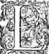
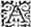
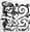

Éd.
Éd. de 1619, 439 verso.

nous tient parole : nous les luy ferons voirveoir avec plus de commodité, queEt si ce moyen nous defaut, je suis d'opinion que nous allions exprez en leurs hameaux, et que nous employons une journee en une si gracieuse occupation. - Madame, respondit Cleontine, puis qu'Adamas le vous a mandé, vous le devez tenir pour tres-asseuré : il viendra sans doute avant que de s'en retourner en sa maison, accompagnantet il sera bien-aise que toutes ces belles filles accompagnent η Alexis lors qu'il la vous presentera. - Mais à propos d'Alexis, reprit Galathee, dy nous Lerindas, est elle avec autant de beauté que l'on nous a dictdit car je sçay que tu es personne de jugement, et que tu n'as pas failly de la bien considerer. - Madame, respondit-il, elle est veritablement belle, mais à mon gré il y en a trois qui me plaisent bien d'avantage, et puis que vous me le demandez, j'ayme mieux le vous dire, que si Leonide avoit cét avantage ; Je suis d'avis, Madame, que vous lesle changiezchangez aux Nymphes que vous avez, si pour le moins vous voulez avoir les plus belles filles qui soient au monde. - Et comment respondit Galathee, tu les trouves plus belles que mes Nymphes ? - Plus belles, Madame, respondit-il que vos Nymphes ? Mais dites je vous supplie, plus belles que toutes les Nymphes qui sont au monde. - Et quoy Lerindas, plus belles encores que je ne suis ? dit Galathee en sousriant. - O Madame, repliqua-t'il un peu surpris, ne parlons point de vous, vous estes la Dame et la Maistresse des Nymphes, mais je dis bien que toutes les autres leur doivent ceder autant en beauté, que je suis moins beau que la
plus belle de vos Nymphes. - Vous verrez dit SilvieSilvye, que Lerindas est devenu amoureux. - Je ne le serois pas devenu, respondit-il avec un visage mesprisant, si elles estoient aussi desdaigneuses que vous. Galathee alors faisant un esclat de rire, - Pour certain, dit-elle, SilvieSilvye a raison infailliblement Lerindas est amoureux de ces bergeres, mais laquelle te semble la plus agreableaggreable des trois ? - Attendez, Madame, respondit-il, je n'ay pas peu d' affaire à discerner ce que vous me demandez. L'une a plus d'attraits, l'autre plus de modestie, et l'autre plus de beauté. La premiere s'appelle Daphnide, l'autre Diane, et la troisiesme Astree : - Je m'asseure reprit Galathee, que c'est cestecette Astree qui est la plus belle, n'est-il pas vray ? - Il est certain, dit-il, et Diane est la plus modeste, et Daphnide la plus attirante : et pour dire la verité, les attraits me plaisent fort, la modestie m'est bien agreableaggreable : mais en effect, j'ayme mieux la beauté : Et par ainsi je conclus, que si je suis devenu amoureux, il faut par necessité que ce soit d'Astree. Mais Madame, croyez que quand vous leles verrez, vous me tiendrez pour personne de jugement, et que Silvie, quelque dédaindesdain qui soit en elle, ne les mespriseraprisera pas tant, qu'elle ne voulut bien cette beauté que je dis estre en elles. Galathee se tournant alors vers Cleontine, - Qu'est-ce ma mere, luy dictdit -elle, que Celidee juge de ces bergeres ? - Madame, dit Cleontine, quand elle se met à les loüer, elle ne peut cesser, et semble qu'elle soit encore plus amoureuse d'elleelles que n'est pas Lerindas : Il est vray que je ne luy ay point encore ouy parler
de cestecette bergere qu'il nomme Daphnide, et s'il vous plaist que je la fasse appeller, vous oyrezorez de quelle sorte elle en parle. Et parce que Galathee estoit bien aise de sçavoir des particularitez de ces belles filles, et qu'elle fit signe qu'on la fit venir.
- Il est bien mal-aiséaysé , dit Lerindas en sousriant, que vous parliez à elle qu'il ne soit bien tard, car je l'ay laissee pres du Temple de la Deesse Astree, ouoù se doit faire le sacrifice, et Thamire aupres d'elle. Mais, Madame, continua-t'il, elle ne vous en sçauroit dire guere d'avantage que moy, soit pour leur beauté, soit pour toute autre chose qu'il vous plaira d'en apprendre. Que si ce n'est que pour sçavoir qui est Daphnide, c'est une belle estrangere qui est arrivee depuis peu conduite par un nommé Alcidon, car encores que je n'y aye pas long-temps demeuré, je n'ay laissé de m'enquerir, la voyant si belle, qui elle estoit. - Madame, dit alors Cleontine, vous aurez bien-tost Celidee et Thamire icy qui vous en diront tout ce qui s'en peut sçavoir.
Ainsi Galathee apprenoit des nouvelles de ces belles bergeres, et plus elle s'en enqueroit, et plus elle trouvoit que CeladonCalidon avoit raison d'aymer Astree, puis que chacun luy donnoit tant d'avantage sur toutes les autres, et le disner estant finy, la Nymphe s'en alla voir Damon, qui ne sortoit point encores de la chambre, parce que la blessure l'avoit rendu si foible pour la perte du sang, et pour le travail qu'il avoit fait d'aller si long-temps à pied avec ses armes, qu'il fut contraint de ne point se mettre à l'air, que la force ne luy fut un peu revenuë, de peur de quelque inconvenient.
CependantHalladin l'estoit venu retrouver, et ne bougeoit des pieds de son lict, le servant avec tant de soinsoing , et de vigilance que Galathee mesme l'en estimoit infiniment. C'estoitCestoit le troisiesme jourη qu'il avoit esté blessé, et la Nymphe qui pensoit estre obligee à la valeur de ce Chevalier, pour avoir esté blessé en deffendant la querelle des Dames, et de plus luy estant proche, et l'outrage luy ayant esté faict en ses Estats et en sa presence, elle resolut de ne l'abandonner qu'il n'eust receu sa santé entierement, et parce que pour le desennuyer elle luy faisoit sçavoir tout ce qu'elle aprenoitapprenoit de nouveau, elle voulut que Lerindas reditredir en sa presence ce qu'il luy avoit rapporté de son voyage. Le jour se passa de cette sorte, et cependant estant desja bien tard, Celidee, et Thamire revindrent lesquels Galathee voulut voir incontinent, tant parce qu'elle estimoit grandement la veuë de cette bergere, que pour le desir de sçavoir encores de plus particulieres nouvelles des bergeres qu'elle venoit de visiter. Estant donc en sa presence où TamireThamire l'accompagna, - Et bien sage bergere, luy dit-elle, qu'est-ce que vous nous apportez de nouveau de vostre voyage ? - Madame, respondit Celidee, nous y avons satisfait et aux hommes, et à Dieu, car nous avons rendu un devoir au sage Adamas, que nous luy devions, en visitant Alexis sa fille, et un sacrifice au grand Tautates qui luy estoit deu, pour le remerciement du Guy de l'an-neuf : et je vous puis asseurerassurer que nous sommes demeurez tous infiniment satisfaits. Car, Madame, il faut que vous sçachiez qu'Alexis est la plus belle,
la plus aymable, et la plus courtoise fille qu'on puisse voir, et qu'elle a donné tant de contentement à toutes ces bergeres qui la sont allé voir, qu'il n'y a pas une de nous qui ne l'adoreη , et puis Adamas s'est efforcé de nous y recevoir, avec une si bonne chere, et avec tant de caresses, qu'il faut advoüer n'y avoir rien qui l'egale. Quant au sacrificeη , le grand Tautates l'a receu de si bon cœur, que toutes les hosties se sont trouvees si entieres, que nous ne sçaurions les desirer plus parfaites. Le Guy que nous avons veu si beau et si gros, que vous diriez que c'est un autre arbre qui a esté attaché à ce chesne, tant il y est venu en grande abondance, de sorte que cette annee nos Druydes n'auront pas occasion de l'espargner en nos sacrifices, ny à nous, ny à nostre bestailbestial . Mais outre cela nous avons eu le plaisir des Amours de Hylas, qui est de la plus gracieuse humeur qui fut jamais : Le jugement de Diane sur la recherche de Silvandre et de Philis, et la rencontre de Daphnide et d'Alcidon, qui n'a point esté un petit entretien pour toute l'assembleeη : - Et qui est cét Hylas duquel vous parlez ? dit Galathee : - C'est, respondit la bergere, un jeune homme qui ayme toutes les bergeres qu'il rencontre, et soustient que ce n'est point inconstance : mais avec des raisons si gracieuses, qu'il est impossible de s'ennuyer quand il parle ; Et jugez Madame, puis qu'il ne peut pas avoir plus de vingt ou vingt et un an, et il nous raconta plus de vingt filles desquelles il a desja esté amoureux, et la plus part toutes presentes, et la derniere qu'il a quitté ç'a esté la belle et sage Alexis,
et Dieu sçait pour qui : Je vous asseure bien, Madame, que ce n'est pas pour prendre une plus belle, car il a choisi Stelle qui a desja assez d'aage, et qui n'approche en rien à la beauté de cette belle Druyde. - Et quoy, dit Galathee, la fille d'Adamas se laisse servir, et devant les yeux de chacun ? - Madame, respondit Celidee, je vous asseure que personne ne s'en peut scandaliser, et qu'il n'y a fille Vestale qui le peut refuser, et si vous l'aviez veu, vous en diriez autant : et je m'asseureassure que s'il a l'honneur de nous voir, que vous, Madame, ou quelqu'une de ces belles Nymphes, n'eschaperezeschapperez pas sans estre servies de luy : et qu'il ne demeurera pas d'avantage de le dire que de le penser : - Mais reprit Galathee, et qu'est-ce que ce jugement de Diane ? - Madame, respondit la bergere, il advint il y a quelque temps, que Phylis et Silvandre entrerent en dispute, seulement pour plaisir, se reprochansreprochant l'un à l'autre qu'ils n'avoyentavoient pas assez de merite pour se faire aymer, car Silvandre encore qu'il soit tenu pour l'un des plus accomplis bergers de toute la contree, si est-ce que l'on ne le voyoit point aymer ny estre aymé particulierement. Et parce que Philis luy reprochoit que c'estoit par faute de courage, et de merites, et que Silvandre en disoit de mesme d'elle, ils furent tous deux condamnezcondannez à rechercher Diane, et que, trois lunes escoulees, elle jugeroit lequel des deux auroit gaignégagné . - Sans doute, dit Damon, Diane aura jugé à l'advantage de la fille. - Son jugement, respondit Celidee, a esté assez douteux : Elle a dit que PhilisPhylisestoit plus aymable
que Silvandre, et que Silvandre se scavoit mieux faire aymer que Philis. - Vrayement reprit Damon, Diane doit estre discrette et sage bergere : car elle les a voulu contenter tous deux, et elle l'a fait avec beaucoup de discretion. Mais, Madame, continua-t'il se tournant vers Galathee, vous ne luy demandez point qui est cette Daphnide ? j'ay ouy que Lerindas l'a aussi nommee pour l'une des plus belles de toutes ces bergeres, et je voudrois bien sçavoir qui elle est, et cét Alcidon aussi, et apres je vous en diray la raison : Thamire alors prenant la parole, - Seigneurη , luy dit-il, Lerindas a raison de la dire belle, car veritablement elle l'est, mais non pas de la nommer bergere, puis qu'elle ne l'est pas, encore que pour se desguiser elle porte l'habit de bergere : Nous avons apris par Hylas, que Daphnide est une des principales Dames de la province des Romains, et que Alcidon est un Chevalier des plus aymez du Roy Eurich, et qui sont venus en cette contree pour la curiosité qu'ils ont de voir la fontaineη de la verité d'Amour. - C'est assez, dit Damon, et lors se tournant vers Galathee, Madame, luy dit-il, vous devez voir en toute façon ces deux personnes, et en faire cas, car Daphnide est l'une des plus belles de toutes les Galloligures, et qui a esté tellement aymee du Roy Eurich, qu'il s'en est fort peu manqué qu'il ne l'ait faite Royne des Vissigots, et quoy que cela soit arrivé cependant que j'estois en Affrique, et que j'essayois de me divertir par des longs et penibles voyages, si est-ce que par les nouvelles qui en venoient au Roy Genseric,
j'ay sçeu tout ce qui s'y est passé. Et Alcidon, je le vous donne, Madame, pour le plus accomply Chevalier qui ait jamais esté dans la Cour de Thorismond,Thorrismond car c'est là où je l'ay veu, tant aymé et chery de ce Roy, qu'il ne pouvoit assez luy faire de demonstrations de sa bonne volonté. Je pourrois bien vous en raconter beaucoup de choses qui meritent d'estre sçeuës, mais il vaut mieux que vous les appreniez de sa bouche que de la mienne, puis qu'il estils sont si pres de vous. Et parce que Thamire et Celidee s'estoient esloignez, voyant que Damon continuoit de parler un peu bas à la Nymphe : Damon continuant son discours - Mais, Madame, luy dit le Chevalier, il que veut dire que cette jeune bergere a le visage si gasté de coups, il semble qu'elle soit si sage et discrette, comment est-ce que ce mal-heur luy est arrivé ? - Ces blessures, respondit alors Galathee, sont les plus glorieuses marques que fille porta jamais, et là dessus luy raconta briefvement pourquoy elle s'estoit traittee de cetteceste sorte, et combien heureusement son desseindessain luy estoit reüssireüssy , puis que la folle affection de Calidon s'estoit esteinteestainte , et la parfaite amour de Thamire s'estoit de telle sorte augmentee, qu'il ne l'avoit jamais tant aymee belle, qu'il l'aymoit maintenant avec cette difformité. Damon admira cette resolution en cette jeune fille, et plus encores en une bergere, puis que ces generositez ne se rencontrent guere souvent que parmy les courages plus relevez. - Ne vous arrestez pas à cela, reprit la Nymphe, les bergers de cette contree ne sont pas bergers par necessité, et pour estre contraintscontraincts de garder leurs troupeauxtrouppeaux , mais
pour avoir choisi cette sorte de vie, afin de vivre avec plus de reposη et de tranquilité, et d'effect, ils sont parents et alliez à la plus grande part des Chevaliers, et des Druydes de nos Estats. - Je vous asseure, Madame, respondit Damon, qu'encoreencores que les coupsη que cetteceste fille s'est donneedonnez , soient avec la pointe d'un diamant, je sçay une personne qui la gueriroit, pourveu qu'elle eust le courage de faire ce qui seroit necessaire. - Pour le courage, respondit Galathee, vous en devez moins estre en doute que de sa volonté. - Comment, reprit-il tout estonné, elle n'aura pas la volonté de redevenir belle ? Je croy qu'elle seroit la seule fille qui fut au monde de cette opinion. - Appellons la, dit Galathee, et vous verrez ce qu'elle vous en dira : Et lors relevant la voix, et nommant Celidee, elle vint sçavoir ce qu'elle luy vouloit commander. - Celidee, luy dit la Nymphe, voicy un Chevalier qui ayant pitié de vostre visage, et s'estant enquis de ce qui vous est arrivé, s'asseureassure de vous en faire guerir, et vous rendre aussi belle que vous avez jamais esté, si vous le voulez : - Ma fille continua Damon, c'est sans doute que vous en guerirez, car me trouvant en Affrique, il advint qu'une des filles d'Eudoxe fut blessee d'un diamant au visage, et de telle sorte que l'os presque de la jouë paroissoit : Il y eut toutefois un sçavant Myre, qui moüillantmoüellant un petit bastonbaton de son sang le pensa avec un remede qu'il nommoit l'unguent de la Sympathieη , et avec lequel il la guerit contre l'opinion de tout le monde : Et parce que je treuvaytrouvay cette cure fort rare, je fus curieux de luy en demander la recepte, mais il
me respondit, que c'estoit chose qu'il ne pouvoit donner à personne pour s'en estre obligé par serment mais que toutes les fois que j'en aurois à faireaffaire , il ne falloit que luy envoyer un petit bois ensanglanté de la blesseureblessure , et qu'incontinent il en feroit la cure, parce que le remede estoit aussi bon de loing comme de prez, et qu'il ne falloit que tenir la playe bien nette : De sorte que, ma fille, si vous voulez guerir, il ne faut seulement qu'égratigner un peu ces blesseuresblessures en sorte que nous en ayons du sang, et vous verrez que vous reprendrez vostre premiere beauté.
- Seigneurη
, respondit alors Celidee, vostre courtoisie m'obligeη
trop au soing qu'il vous plaist avoir de ce visage qui ne le vaut pas : mais je vous diray bien que cette beauté de laquelle vous me parlez, s'il y en a eu quelquefois en moy, m'est à cette heure de telle sorte indifferente, que si je pouvois la retrouver pour aller d'icy en mon logis, je pense que je ne m'y en retournerois que le plus tard qu'il me seroit possible. Quand je me souviens qu'elle n'a jamais esté en mon visage que pour me donner de la peine, que pour m'accabler d'importunitez, et que pour me tenir en des continuelles inquietudes, je vous asseure, Seigneurη
, que si je pensois la rencontrer par cette porte, je passerois plustost par la fenestre, que d'avoir plus d'intelligence et d'amitié avec elle : - Toutefois, adjoustaajousta
Damon, il me semble que toutes les filles ont un desir particulier d'estre belles, ouoù pour le moins de ne faire point de peur. - Celles qui recherchent cestecette beauté, repliqua-t'elle, en ont peut-estre affaire pour estre
aymees de ceux desquels elles desirent l'amitiéη : mais moy, Seigneurη , je vous proteste que non seulement je ne veux paroistre belle qu'aux yeux de Thamire, mais que je voudrois mesme me pouvoir rendre invisible pour n'estre jamais veuë que de luy. - Encore, reprit Damon, devez-vous desirer que Thamire mesme vous trouve belle. - Il est vray, dit-elle, mais je croy que ces blesseuresblessures qu'il me voit au visage luy doivent sembler plus belles que la beauté du taintteint , ny la proportion et delicatesse des traits qui souloient y estre, lors qu'il se resouvientressouvient en les voyant que c'est pour estre toute à luy, et pour dire ainsi, le prix que j'ay voulu payer pour me racheterrachepter de la servitude d'autruy, et me donner entierement à luy. - CetteCeste memoire, reprit la Nymphe,Nimphe ne laisseroit pas de luy demeurer de vostre amitié et de vostre vertu, et de plus, il vous possederoitpossedoit belle aussi bien que vertueuse. - Quant à moy, Madame, dict la bergere, je suis si contenteη et si satisfaicte de vivre en l'estat oùou je suis, que je penserois offencer le Grand Tautates d'en desirer ou d'en rechercher un meilleurmeillieur . ToutefoisToutesfois si Thamire le veut, je suis preste de faire tout ce qu'il m'ordonnera. Le berger alors prenant la parole : - Ma fille, dit-il, il est certain que je ne vous ay jamais tant aymee belle, que je fais en l'estat où vous estes, ayant cognucogneu que vostre amitiéη envers moy est si grande, qu'elle vous a faict donner pour vous acheterachepter toute à Thamiremoy le prix le plus cher que les filles puissent avoir, qui est cette beauté que vous méprisez si fort. Mais j'avoüeray bien que si je pensois la vous pouvoir rendre,
il n'y auroit ny peine ny travail que je n'employasse de fort bon cœur, me semblant d'y estre obligé pour n'estre ingrat ou mescognoissant envers vous. Et pource, Seigneurη , dit-il se tournant vers Damon, je vous supplie si vous pensez qu'il y aitayt quelque bon remede, de me faire cette grace de me le vouloir dire, afin que je vous aye cestecette eternelle obligation, et que vous puissiez vous vanter que vous avez esté cause de rendre contenteη une si parfaitteparfaicte amitiéη que la nostre. Damon alors,η - C'est chose tres-asseureeassuree , dit-il, qu'elle guerira et sans point de peine, car j'en ay veu l'experience : Il faut moüiller de petits bastons dedu sang des blesseuresblessures , que vous porterez en diligence où je vous diray, et où vous ne demeurerez que *douze ou quinzehuict ou dix jours à aller, et vous adresserez à ce Myre auquel j'escriray : n'entrez point en doute qu'elle ne guerisse incontinent. Ce fut bien alors que Celidee commença à despiter contre cette beauté, puis qu'elle la devoit priver un si long temps de son tant aymé Thamire : - O Dieux ! dit-elle les larmes aux yeux, falloit-il que je me ravisse cette pernicieusepernitieuse beauté avec tant de peine pour la racheter maintenant si cherement ? Est-il possible qu'un bien si mesprisé de moy vueille revenir deux fois en ma puissance ? Eh Thamire ! contente toy de ta Celidee telle qu'elle est, sans te vouloir mettre au hazard de la perdre pour jamais, car peut-estre t'esloignant d'elle pour aller querir encette beauté au pays estrange cette beauté, laη trouveras-tu, quand tu seras de retour que l'ennuy de ton esloignement te l'aura ravie pour la mettre dans un tombeau. Tu m'as dict si souvent
que tu vivois le plus heureux berger du monde, et qu'est-ce que tu veux avoir d'avantage ? veux tu plus d'heur que d'estre heureux ? Jouys, berger, de ce contentement η que le Ciel t'a donné sans en rechercher d'avantage qu'il ne t'en a pas voulu octroyer, et te contente de ce que les Dieux ont jugé que tu devois estre content. Si c'est pour moy, Thamire, que tu desires cette beauté, sors de cette erreur, et croy, amy, que ton esloignement m'est si ennuyeux, que si je pouvois perdre la vie sans perdre tala veuëη ou sans estre privee de toy, je la donnerois librement pour ne t'esloigner jamais. Le voyage que l'on te propose est long, il est plein de perils, tu vas parmy desles barbares, peut-estre celuy que tu vas cercherchercher est mort ; et qui sçaitscait si cette recette pourra servir à mon visage, encores qu'elle ait esté bonne pour un autre ? Je masseurem'asseure que le diamantdiament dont celle que ce Chevalier raconte a esté blessee, n'estoit qu'un verreη , ou quelque pierre falsifiéeη , et non pas un vray diamant, et par ainsi il n'y avoit pas mis le venin qui est en mes blessures : et puis sa playe fut pensee aussi-tost qu'elle fut faite :faicte mais les miennes sont vieilles, et par consequent hors de toute esperance d'estre gueriesguaries. Mais soit ainsi, ô Thamire, que je puisse la ravoir cette beauté mesprisee, par la peine que tu y mettras, encore que la chose soit bien douteuse : mais dyd'y moy, puis que je ne me soucie point, et que ce n'est que pour ta consideration que tu le fais, et pour avoir peut-estre un peu plus de contentement auprezaupres de moy ? est-il possible que tu vueilles acheter ton
plaisir à mes despens, et encores avec de si chers despens que ceux que tu peux bien prevoir ? En premier lieu, il faut que tu emportes de mon sang, mais ce sang n'est rien, je le donnerois bien tout pour te retenir aupresauprez de moy : mais que de larmes penses-tu que mes yeux te donneront en ton esloignement ? Que d'ennuis, et que de mortelles peines ressentiray-je en cette separation ? et quelle rendras-tu ma vie tant que je ne te verray point ? O Dieux ! Thamire, si tu sçavois en quel estat tu mettras ta Celidee, je ne puis penser que tu la voulussesvoulusse delaisser pour si peu de chose que cette passagere beauté que tu luy veux aller chercher si loing. Et bien, Thamire, tu la luy apporteras cette beauté apres un long exil, un penible voyage, et un chemin plein de perils : Et que sera-ce berger, si incontinent apres une fiévreη
de peu de jours, un ennuy de quelques heures, ou le bon-heur d'un enfant la renvoyrarenvoya encores plus loingloin que tu ne la seras allé querir ? Mais quand cela ne seroit point, le temps qui roule incessamment, et l'aage qui vole avec cent
"
aisles,
ne raviront-ils pas cette fleur de mon visage
" aussi tost presque que tu seras revenu ? Et
"
cependant tu auras perdu inutilement et ce temps et cét aage que le Ciel nous permet de pouvoir employer ensemble.
Les pleurs de Celidee accompagnoient de sorte ses paroles, que Damon en fut touché de compassion, et lors qu'il vit que pour rendreprendre
son mouchoir, elle donnoit quelque cesse à ses plaintes. - Sage et discrette bergere, luy dit-il, vostre vertu se rend admirable à tous ceux qui en ont
la cognoissance, et oblige chacun à vous servir, non seulementsoulement en cette occasion, mais en toutes celles qui se presenteront. Je confesse que vous avez raison de ne vouloir point que Thamire vous esloigne, mais non pas qu'il ne
procure de vous remettre en l'estat où vous souliez estre : car outre que son contentement y est joinct, encores a t'il un autre desir de vous rendre ce que si
librement vous avez donné pour vous rendre toute sienne. Et afin de satisfaire à l'un et à l'autre, je vous promets de faire venir icy le Myre dans peu de temps, qui fera luy mesme la cure de vostre visage, sans que vous perdiez de veuë vostre cher et tant aymé berger. - O Seigneurη
! s'escria alors Celidee, si vous faites cette grace à cette pauvre bergere, le grand Tautates sera celuy qui vous en rendra le loyer, car il n'y a rien qui despende de moy qui puisse y satisfaire, et toute ma vie, j'employerayemploiray mes plus ardentes supplications, afin qu'il vous rende aussi heureux et contantcontent , que le bien que vous me faites surpasse tous ceux que je puis recevoir de tout autre que d'un seul
Thamire. Et à ce mot se jettant à genoux ; - Par le nom,
dit-elle que vous portez
de Chevalier et par celle que vous aymez le plus, ou par celle que vous aymerez, je vous conjure, Seigneurη
, de vouloir me continuer cette grace, et divertir
Thamire de ce perilleux voyage.
Le Chevalier admirant et la vertu et l'affection de cette bergere, la releva, et l'asseuraassura
que de son advis, Thamire ne l'abandonneroit jamais : Et l'heure de dormir estant venuë, la Nymphe se
retira avec resolution de faire le lendemain son sacrifice, et puis le jour d'apres, voir ces bergeres, ayant opinion que Damon seroit en estat de sortir du logis, et par mesme moyen elle essayeroit de ramener avec elle à son retour Daphnide et Alcidon, afin de leur rendre l'honneur qu'ils meritoient, et l'ayant fait sçavoir à Damon, il *la supplia de treuver bon qu'il fit le sien ensemble, parce qu'ayant
s'y prepara avec un desir extreme de sçavoir quelle seroit sa fortune : Et parce qu'il avoit
esté adverty que l'Oracle responditrespondoit
à ceux qui avec devotion en supplioient le Dieu, il pensoitpenseroit
avoir usé de trop grande nonchalance, si y estant conduit
y
avoir esté conduit presque miraculeusement et sans y penser, il en perdoit l'occasion. La Nymphe qui ne desiroit rien d'avantage que d'obliger ce Chevalier, luy accorda facilement ceste requeste, et d'autant plus que tous deux vouloient consulter l'Oracle de BellenusBelenus. Le matin donc estant venu, et trouvant toutes choses prestes pour le sacrifice, CleotineCleontine met sur sa teste un chappeau de fleurs, se ceint de verveine, prend un rameau de Guy en la main, fait allumer le feu, et apres que les taureauxη
blancs eurent esté sacrifiez, elle en jetta du sang dessus, et puis sur la Nymphe, et sur Damon, puis maschant du laurier,
et jettant de la Sabine, du Guy et de la verveine dans le feu, elle courut à l'ouverture de Bellenus, où touchant la serrure avec la branche dude
Guy, les portes s'ouvrirent, faisant un grand esclat, et elle se panchant dans la caverne le plus qu'elle peust, tenant toutefoistoutesfois les pieds dehors, elle receust longuement à bouche ouverte le vent, qui avec certain murmure comme de voix mal articulee, venoit du profond de l'antre, et puis ne le pouvant plus supporter, et comme enceinte presque de ce grand entousiasme, s'en revint courant au lieu du sacrifice
qui estoit dans un petit bocageboccage à l'entree du temple, tenantretenant encore en cela de leur ancienne coustume, de ne point sacrifier que soubssoubz le Cielη mesme : et retournant en ce lieu, où elle trouva encores la Nymphe et le Chevalier, qui àa genoux attendoient la response de Bellenus, et lors, prenant l'un des coinscoings η de l'autel d'une main, et de l'autre tenant tousjours le rameau du Guy, les cheveux mal en ordre, et comme herissés, et les yeux égarez remuansesgarez remuants incessamment dans la teste, et le visage de cent couleurs ; elle se leva sur le haut des pieds, paroissant beaucoup plus grande qu'elle ne souloit estre, et toute tremblante et l'estomach pantelantpanthelant , elle profera d'une voix toute autre qu'elle ne souloit avoir, telles paroles.
VA Nymphe, et rendrends tes vœux, mais retiens ce presage,
Bien tost, n'en doubtedoute point, tu sortiras d'erreurη
,
Mais garde que l'Amour se changeant en fureur
Beaucoup plus ne t'outrage.
Et toy parfaictparfait amant,
Lors que tu parviendras où parle un diamantη
,
Tu seras rappellér'appelle de la mort à la vie
Par celuy des humainsη
,
A qui plus tu voudrois l'avoir desja ravie,
Laisse donc contre luy desormais tes desdains.
La Nymphe et le Chevalier ayant receu cestcét Oracle, demeurerent quelque temps à le
considerer, mais leur estant impossible de l'entendre entierement, l'un des plus anciensanciennes
Vacies, qui s'y treuva present, et qui avoit accoutusmé de donnerfaire bien souvent
l'esclaircissement de semblables responces, s'approchant de la Nymphe, luy tint un tel langage :
" - Les oraclesη
qui sont la parole du grand Dieu,
" sont rendus ordinairement
fort obscurs par luy
" tant pour retenir la curiosité deshommes, cette erreur dure hélas
que
" d'autant que les choses futures doivent estre
" cachees aux humains, pour les exempter de l'apprehension
" qui est quelquesfoisquelquefois une des plus
" grandes parties du mal, puis que si nous sçavions
" l'heure de nostre mort, nous ne gousterions plus
" les douceurs de la vie, mais ne vivrions desja
" plus que comme estans à la porte du tombeau. Nostre grand Tautates qui nous ayme comme ses enfans, et qui veut avoir occasion de nous faire tousjours plus de graces, nous advertit des choses futures, mais obscurement, et ne nous en laissant entendre qu'autant qu'il faut que nous en sçachions, pour observer les choses qui le peuvent convier à nous faire du bien : Et pour vous monstrer que je dis vray, vous voyez, grande
Nymphe
η
, qu'il vous advertit de rendre les vœux que vous avez faits, parce
" qu'il n'y a rien qui tienneretienne
"
plus la main
η
de Tautates, de faire
" de nouvelles gratifications à ceux
" qui l'en prient, que de faire des vœux legerement,
" et les oublier nonchalamment : apres il vous predit que vous sortirez bien tost de l'erreur de
où vous estes, et cela avec des paroles si claires qu'il ne les faut point esclaircir d'avantage ; Et pour
monstrer que veritablement il vous ayme, de peur que vous ne soyez surprise du malη
qu'il prevoit
vous devoir arriver : il vous en advertit de bonne heure, afinaffin que soit par la vertu de la force, soit par celle de la prudence, vous vous prepariez à lesle
η
recevoir, ou à y remedier. Sur-quoy je suis contraintcontrainct de vous dire, que par la cheuteη
des animaux sacrifiez, par la couleur et quantité de leur sang, et par les entrailles, que depuis une demie lune nous avons visitees, nous jugeons que quelque estrange accident est prest de tomber sur nos testes : car les victimes tombent ordinairement à gauche, estansestant tombees, se debattent merveilleusement : et se debattansdebattant , jettent des hurlemens effroyables en mourant, leur sang quelquefoisquelquesfois ne veut pas sortir, et s'il sort, il peche, et en qualité, et en quantité, car la couleur en est toute bruslee, et il en sort si peu, qu'il ne semble pas que ce soient des taureaux, mais des bien jeunes aigneauxagneaux ,
que ceux que
nous immolons. Quant aux entrailles, qu'est-ce, Madame, que je vous en puis dire, sinon que nous les trouvons si defaillantesdeffaillantes, que quelquefoisquelquesfois nous pensons de
resver, y manquant quelquefoisquelquesfois le cœur tout entier, et d'autrefoisautresfois le foye ? Bref, nous avons tant de signes du Ciel, que ce n'est pas sans raison si Tautates vous advertit de
rendre vos vœux,
puis que souvent par des humbles et ardentesardantes "
prieres, on peut divertir ou adoucir pour le moins les chastimenschatiments "
qui sont prests de tomber sur nous.
Quant à l'Oracle qui vous a esté rendu ô vaillant Chevalier ! vous vous en devez contenter,
puis qu'il semble estre fort favorable, soit que d'estre rappellé de la mort à la vie, s'entende de quelque grand peril où vous tomberez, et duquel vous serez retirésauvé , ou que cette mort signifie quelque desplaisir que vous avez, et duquel vous serez deschargé bien-tost, tant y a que vous en sortirez par l'assistance de celuy que vous hayssez le plus, et voyez comme Bellenus, qui est Dieu-homme, c'est à dire le Dieu qui ayme les hommes, et par consequent la paix et la concorde parmy eux, veut qu'ainsi qu'il nous pardonne quand nous l'offensons, nous remettions aussi les outrages à ceux qui nous font injure : Il vous commande ce debonnaire Dieu, de laisser la mauvaise volonté que vous avez contre un homme, et avant que
de vous en faire le commandement, il vous propose
et promet le secours qu'il vous donnera, comme vous y voulant obliger par les devoirs de la courtoisie. Et pource, Madame, et vous genereux Chevalier, remerciez Bellenus de la faveur qu'il vous faictfait à tous deux, afin que cette recognoissance l'oblige à vous continuer ses graces pour tousjours.
Le Vacie parla de cette sorte, et la Nymphe et le Chevalier s'estantsestans remis à genoux, firent les actions de graces qu'ils devoient, et apres se retirerent au logis, en intention d'aller le lendemain au temple de la bonne DeesseBonne Deesse
avant que
faire autre chose, et puis à leur retour voir ces bergeres de Lignon, et ensemble
Daphnide et Alcidon, encores que Damon eust intention de se laisser cognoistre le moins qu'il pourroit à eux, faisant dessein de demeurer encores entr'eux
quelques jours, et puis s'il ne trouvoit point de remede à ses desplaisirs de s'en aller si loing, que jamais il n'ouytoüit parler ny de l'Aquitaine, ny de personne qu'il y eust cogneuëcognuë . S'estant donc mis à table avec cette resolution, et le disner estant presque finy, la Nymphe vit entrer dans la salesalle un Chevalier d'Amasis, et auquel elle sçavoit qu'elle avoit une grande creance. Ce Chevalier apres luy avoir rendu l'honneur qu'il luy devoit, s'approcha d'elle, et luy dit à l'oreille, qu'il avoit de grandes choses à luiluy dire de la part d'Amasis, mais que le discours estant un peu long, etestant necessaire d'estre tenu secret, il ne pouvoit le luiluy dire qu'en particulier, en ayant mesme commandement. La Nymphe qui luy vit le visage tout changé, oyant ces paroles, alla soudain penser à ce que le Vacie luy avoit dit du deffaut des victimes, et ne pouvant s'imaginer un plus grand mal que la perte de sa mere, elle luy demanda tout haut, comme se portoit Amasis ? - Madame, respondit-il, elle est en fort bonne santé Dieu mercy, et desire passionnément de vous voir, luy semblant qu'il y a un siecle que vous estes esloignee d'elle. - Nous lela η verrons bien-tost, respondit Galathee, puis que Damon est en estat de monter à cheval, n'ayant pas esté raisonnable de le laisser au lict, puis qu'il avoit receu ces blessures en nous deffendant contre l'injurieux Argantee : Et à ce mot faisant signe qu'on deservit, elle se retira incontinent apres dans la chambre, où elle fit appeller le Chevalier d'Amasis , pour entendre ce qu'il avoit à luiluy dire ; et parce qu'elle estoit en impatience de sçavoir
ce que se pouvoit estre : - Ma mere, dit la Nymphe, a t'elle eu quelque nouvelle de l'armee des Francs, et comment se porte ClidamantClidaman ?
- Madame, respondit le Chevalier, elle en a veritablement receu ce matin, qui ne doivent pas estre trop bonnes : mais elle desire de les vous
communiquer elle-mesme, et vous prie de la venir incontinent trouver : elle m'a dit, que je vous fisse
entendre que les Francs ont faitfaict un grand tumulte contre le Roy Childeric, qui a esté contraint de se retirer en Thuringe vers le Roy BissinBisin
η
,
je crains grandement que cela n'aye pas esté fait sans beaucoup de sang respandu, et vous sçavez que ClidamantClidaman, Lindamor, et Guyemants, estoient ordinairement aupres de luy, Dieu vueille qu'il ne leur soit point arrivé quelque mal-heur. D'une chose, Madame, vous puis-je bien asseurer, qu'elleη
est fort triste, et fort en peine et troublee, et qu'elle desire
grandementfort de parler à vous. - Mon grand amy, luy dit Galathee, vostre discours me met bien en peine, et je voudrois ou n'en sçavoir pas tant, ou en apprendre promptement le reste : Il faut avant que je vous renvoye, que je parle un peu à la sagevieille
Cleontine, qui m'a rendu l'Oracle ce matin, et à Damon, qui est une telle personne, qu'ilqui nous peut beaucoup servir aux accidens qui nous peuvent arriver, Et les faisant appeller tous deux, elle leur fit entendre ce qu'Amasis luy avoit mandé : et parce qu'elle ne sçavoit si elle devoit incontinent s'en retournerl'aller trouver ,
ou bien aller rendre son vœu à Bon-lieu, ainsi que l'Oracleη
luiluy avoit dictdit , elle demanda à la vieille Cleontine ce qui luy en sembloit : elle luy respondit, - Il me
semble, Madame, qu'en toutes nos affaires nous devons tousjours recourre à Tautates, et vous d'autant plus que vous y estes obligee par le vœu que vous en avez faitfaict , et par le commandement que l'Oracleη
vient de vous en faire, les rapports des Vacies nous ont, il y a quelque temps, rapporté que les sacrifices nous menaçoient de quelque grand malheur. Il me semble que pour lela
divertir, le meilleur remede c'est de recourre à celuiceluy qui nous donne ces presages, qui est le Grand Tautates, et le supplier de vouloir en changer les chastimens. C'est pourquoy je concluds que vous devez aller vers la Bonne Deesse faire vostre sacrifice, et le jour mesme vous pourrez estre à Marcilly. Damon fut de ce mesme advis, puis qu'il n'y avoit qu'un demy jour de plus, lequel il seroitferoit fort à propos d'employer à rendre à Tautates ce qu'elle avoit voué. - Vous avez entendu, dit Galathee à celuy qu'Amasis
luiluy avoit envoyé l'opinion de Cleontine et de Damon, asseurez Amasis que je seray demain à bonne heure aupres d'elle, la suppliant cependant de trouver bon qu'ayant faict plus de la moitié du chemin, je ne m'en retourne point sans m'acquitter des vœux qu'elle sçait bien que nous avons faicts, *
et que je vay rendre en partie pour elle.
Ainsi s'en alla ce chevalier, laissant Galathee en telle peine qu'elle ne se souvint point de la volonté qu'elle avoit de voir ces belles bergeres ny Daphnide et Alcidon, ne faisant tout le jour que parler à Damon, et chercher avec luy, quel pouvoit estre le subjectsubjet pour lequel AdamasAmasis la pressoit si fort de s'en retourner, et quoy qu'ils
en parlassent longuement et curieusement, si est-ce qu'ils ne le peurent jamais deviner, se resolvant en fin de partir le lendemain de grand matin, pour estre tant plus-tost aupres d'Amasis, et dés le soir ayant commandé que tout fust prest, Damon s'arma comme de coustume, ayant mis Galathee et ses Nymphes dans leurs chariots, il monta sur un cheval que la Nymphe luiluy avoit donné, qui estoit de ceux de ClidamantClidaman son frereη . Ce Chevalier parut si beau aux yeux de Galathee, qu'il luy fit ressouvenir du gentil Lindamor, et coulant d'une pensee en l'autre, elle s'alla imaginer que peut estre la nouvelle qu'Amasis luy vouloit dire, estoit la mort de ce Chevalier et dés lors elle fit dessein, que Polemas iroityroit en sa place, tant pour l'esloigner d'aupres d'elle, et s'exempter ainsi de cette importunité, que pour avoir quelque volonté de jetter les yeux sur Damon, en cas que Lindamor ne fut plus ; et toutefoistoutesfois se ressouvenant de tant de services qu'il luy avoit rendus, de l'affection qu'elle avoit recogneuë en toutes ses actions, de la gloire qu'il s'estoit acquise en ce voyage parmy tant de nations belliqueuses, et puis sa beauté et sa bien-seance en tout ce qu'il faisoit, luy revenant devant les yeux, elle ne se pouvoit empescher de regretter sa perte, et de faire quelque dessein à son advantage, en cas qu'il ne futfust pas mort, et qu'elle peutput sortir de la tromperieη , où Climante l'avoit mise. CetteCeste pensee l'entretint jusques aupres de Bon-Lieu : mais de fortune passant la riviere de Lignon, elle se ressouvint de Daphnide, d'Alcidon, et des bergeres qu'elle
avoit eu volonté de voir, et se voyant si pressee de partir, et ne voulantdesirant toutesfois que cette Dame estrangere ne s'en allast sans qu'elle eust le bien de la voir, elle manda au sage Adamas qu'elle le prioit de la venir incontinent trouver à Bon-lieu, et en cas qu'elle en fut desja partie, qu'il la suivit jusques à Marcilly, estimant mesme necessaire qu'il y vint pour les nouvelles qu'Amasis avoit receuës, et luy fit dire par Lerindas en secret, qu'il l'obligeroit
infiniementinfiniment de conduire avec luy Daphnide et Alcidon, et apres hastant ses chevaux, elle arriva au temple de la bonne Deesse, où la venerable Crysante la receut avec toute sorte d'honneur et de civilité : Et parce que la Nymphe luy fit entendre la haste qu'elle avoit de s'en retourner à Marcilly, elle commanda qu'incontinent l'on mit la main au sacrifice, afin de ne perdre point de temps, et que le disner fut prest, pour ne la point faire entendreattendre
quand elle auroit satisfait à son vœu, luy reconfirmant que les sacrifices des particuliers estoient trouvez bons et entiers, mais que les victimes qui estoient immolees pour le public, et pour l'heureux voyage de ClidamantClidaman, se trouvoient de telle sorte deffaillantes qu'ilelle
η
n'en pouvoit prevoir que quelque grand desastreη
.
Mais cependant
Silvandre, qui avoit obtenu la permission qu'il desiroit, s'estoit tellement occupé en cela, qu'il avoit oubliéη
de dire à Madonthe, et à Tersandre, qu'il y avoit un Chevalier qui le cherchoit, avec beaucoup de menaces de l'outrager, et n'eust esté que par fortune le
matin il les rencontra quiqu'ils s'alloient promenanspromenant pour prendre de l'air, à cause que Madonthe s'estoit trouveetreuvee mal deux ou trois jours durant, il est certain qu'il eust encore long-temps demeuré sans les en advertir, estant de telle sorte tout employéemporté en cette ardente passion, qu'il n'y avoit point de place en son ame pour quelque autre pensee : Mais les trouvant si à propos, il leur fit entendre bien au long tout ce qu'il en avoit aprisappris de Paris, et le danger pour eux de rencontrer cetcette homme barbare, et qui les cherchoit avec tant de desir de vengeance. Madonthe le remercia de cet advis, et ayant longuement debatudebattu entr'eux qui ce pouvoit estre, ils ne purentpeurent jamais imaginer que ce futfust Damon, parcepar ce qu'il estoit mort selon leur creance, mais plustost que ce seroient des parens de Madonthe, qui ne pouvanspouvant supporter sa fuitte avec Thersandre, cherchoient d'en faire la vengeance. Silvandre qui avoit tousjours porté quelque sorte de bonne volonté à Madonthe, tant pour quelque ressemblance qu'elle avoit à Diane, que par ce qu'elle estoit veritablement tres-vertueuse, et modeste, la voyant pleurer en eut une tres-grande compassion, et luy demandant la cause de ses larmes. - N'ayNay -je pas bien raison, berger, luy dit-elle, de pleurer la miserable fortune qui me poursuit avec tant de cruauté ? puis que ne m'ayant voulu laisser en repos au milieu de mes parens et de ma patrie, elle me vient encores tourmenter en ce lieu, où je pensois pouvoir jouyr du reposη que cette contree donne à tous ceux qui veulent y habiter, et toutesfois je ne puis éviter sa haynehaine , ny me cacher
à cesses coups ; Dieu ! que faut-il que je fasse desormais, puis qu'ayant abandonné ma patrie, mon bien, et toutes mes cognoissances, cette cruelle ne m'a pas voulu laisser, mais me poursuit si cruellement, et me talonneη de si prezpres , que je n'ay plus d'autre azileasile que le tombeau ?η Et à ce mot les larmes sortanssortant en plus grande abondance la contraignirent de se taire pour recourre au mouchoir. Silvandre qui avoit desja esté touché des premiers pleurs de Madonthe, fut encores plus esmeu, la voyant continuer, et ne lela pouvant supporter qu'avec peine, s'offrit de la garder et deffendre avec quantité de ses amis, l'asseurant et qu'il l'asseuroit des outrages de cet estranger, si elle vouloit demeurer en cette contree. En ce mesme temps, Laonice par mal-heur se rencontrant en ce mesme lieu, d'autant qu'elle estoit fort familiere avec Madonthe, la conseilla de se retirer en sa patrie, où elle vivroit avec plus de repos et de tranquilité, et ne point refuser l'assistance de Silvandre pour l'accompagner, pour le moins tant que le pays de Forests dureroit, et qu'il ne seroit que fort bon qu'il futfust encore assisté de quelques bergers de ses amis, afinà fin qu'ils peussentpussentla deffendre contre ces estrangers. Madonthe qui craignoit les outrages, et les violences dont elle estoit menacee, ayant resolu de s'en aller, accepta volontiers la compagniel'assistance de Silvandre, et de ceux qu'il voudroit mener avec luy : Mais Thersandre y contraria, de sorte qu'enfinen fin elle le remercia de sa bonne volonté, et à l'extreme importunité du berger luy permistpermit d'aller seulement avec elle jusques par-dela le lieu où ces estrangers avoient
esté veus : Et à l'heure mesme, apres avoir pris congé de quelques bergers qu'elle rencontra, et prié Laonice de faire ses excuses aux autres, elle se mit en chemin, avec resolution qu'aussi-tost qu'elle seroit arrivee en Aquitaine, elle se mettroit ou parmyη
les Vestales,
ou parmy les filles Druydes, ayant tant de mauvaise satisfaction de sa fortune, qu'elle vouloit entierement sortir de ses mains.
Cependant
Alexis, qui vivoit aupres de la belle Astree, et qui usoit des privileges que la fille d'Adamas pouvoit avoir parmy ces bergersbergeres , avoit desja passé deux joursη
dans son hameau, sans que le grand Druyde fit semblant de s'en vouloir aller, et sans qu'elle perdit un moment hors de la presence de sa bergere, si ce n'estoit lors qu'elle estoit au lict, car tant que le jour duroit, elles discouroient ensemble, et la nuict survenant elles se retiroient dans une mesme chambre, où les licts seulement les separoient. Mais d'autant que l'impatiente amour d'Alexis ne luy permettoit pas de reposer, ny de demeurer au lict si longuement qu'à la belle
Astree, cette seconde foisη
, elle ouvrit les yeux long-temps avant que le jour parut, et soudain qu'elle apperceustapperceut un peu la clarté, elle sortit du lict pour pouvoir de plus pres contempler sa belle bergere endormie, mais il faisoit encores si obscur que s'estant jetté une robberobe sur les espaules, de peur d'estre nuë, elle se prit garde que sans y penser elle y avoit mis celle d'Astree. Amour qui faitfaict
trouver des contentemens extremes à ceux qui le suivent, en des choses que d'autres mespriseroient,
representa à cette feinte Alexis un si grand plaisir d'estre dans la robbe qui souloit toucher le corps de sa belle bergere, que ne pouvant la despoüiller si tost, elle commença à la baiser, et à la presser cherement contre son estomach, et regardant sur la table, elle vit sa coiffure, et le reste de son habit : transportee alors d'affection, elle les prend et les baise, se les met dessus, et peu à peu s'en accommode, de sorte qu'il n'y eust eu personne qui ne l'eust prise pour une bergere : et encoreencores que la robberobe d'Astree luy fut trop estroiteestroitte , si est-ce que se laçant un peu plus lache que ne souloit faire la bergere, il y eust eu peu de personnes qui s'en fussent pris garde, mesme que sa beauté et sa blancheur ne dédisansdédisant point l'habit qu'elle prenoit, estoient de grandes trompeuses pour la faire croire telle. Estant vestuë de ceste sorte, elle s'approche du lict où Astree reposoit, et se mettant à genoux devant elle, commença de l'idolatrer, et ravie en cette contemplation, apres y avoir pensé quelque temps, elle profera assez haut ces vers.
AIinsi dans le giron de Psyché dormiroit,
Ou dedans les vergers d'Amathonte
et d'Eryce
Amatonte et d'Erice
Le petit Cupidon, lors qu'un long exercice
Aux pavotsη
du sommeil ses beaux yeux forceroit,
Ainsi trop curieuse elle l'admireroit
L'Amoureuse Psyché, ce Dieu plein de delice,
Mais quoy qu'il fust armé d'attraicts et d'artifice,
Jamais dans la beauté, tant de beauté n'eut place,
Ny les Graces jamais n'ont faitfaict voir tant de grace,
Qu'Amour dedans ce lict en presente à mes yeux.
Pour voir la Deité, tu mourus bien Semele,
Pourquoy ne meurs-je aussi regardant cette belle,
Si sa divinité surpasse tous les Dieux ?
EncoreEncores qu'Alexis eust proferé ces paroles assez haut, si est-ce que pas une des trois qui estoient dans le lict ne s'esveilla, tant l'aurore par sa venuë les avoit appesanties d'un doux sommeilη : Et par ce qu'il sembloit que le jour croissant peu à peu descouvroit tousjours de nouvelles beautez en sa maistresse, elle se leva, et prenant un siege s'assit vis à vis d'elle, afinà fin de la pouvoir contempler sans empeschement, et lors jettant lesses yeux sur ce visage bien aymé, il n'y avoit rien qu'elle n'admirast, et qui ne fust un nouveau feu adjousté à sa flameflamme . Quelquefois transportee de trop d'affection, elle s'approchoit pour en desrober un amoureux baiser, mais soudain le respect l'en retiroitretireroit . Et en ce combat aprés avoir longuement demeuré interdite, elle dit tels vers d'une voix assez basse.
ILS estoient pris d'un sommeil otieux
Ces deux Soleils, et clos sous la paupiere :
Mais leurs rayons avoient trop de lumiere
Pour ne ravir et n'esblouyr mes yeux.
Tel fut jadis le somnesomme
gratieux :gracieux
De ton bergerη
, vagabondeη
courriere,
Lors qu'oubliant ta peine journaliere,
Tu l'endormis, afinà fin d'en jouyr mieux.
Pourquoy le Ciel ne prometpermet -il
encore
Qu'ainsi que toy de celle que j'adore
En ce sommeil je desrobe un baiser ?
J'entends
Amour ce que tu me veux dire ;
Pour estre heureux, un Amant doit oserη
,
Elle l'osa, mais moy je m'en retire.
Cette consideration eust peut-estre donné plus de courage à nostre feintefainte Druyde, si de fortune Leonide ne se fust esveillee, et peut-estre au bruitbruict des paroles, encore qu'assez basses qu'Alexis avoit proferees. D'abord qu'elle ouvrit les yeux,
elle pensa de voir Philis, au lieu de la Druyde, et luy donnant le bon-jour, luy demanda que vouloit dire qu'elle estoit si matineuse. Alexis sousrit et sans luy respondre, mit une main sur le visage afinà fin de la tenir plus long temps en la tromperie où elle estoit. Et parce qu'à mesme temps, Astree et Diane s'esveillerent, et se tromperent aussi bien que Leonide, toutes deux la saluërent, et luy firent la mesme demande que la NympheNimphe luy avoit faicte. Alexis alors prenant plus de hardiesse, les voyant ainsi deceuës, qu'elle n'avoit pas faictfait lors qu'elles dormoient, s'approchant d'Astree, luy baisa un œil, et en mesme temps luy donnantdonna le bon-jour. La bergere oyant une parole bien dissemblable à celle de Philis, retirant la teste à costé, et lela η considerant mieux, la recogneut incontinent , mais avec un grand estonnement, - Me trompé-je, dit-elle, ou bien est-il vray que je voy soussouz d'autres habits la belle Alexis ? A ces mots, Leonide et Diane la regardant de prezpres , elles recogneurent que veritablement c'estoit la Druyde : Et Astree alors luy tendant les bras avec toute sorte de respectη , et se relevant un peu sur le lict l'embrassa et lela η baisa, pleine de contentement de la voir dans ses propres habits. - Permettez-moy, nouvelle bergere, que je vous baise, dit-elle, et que je vous asseure que jamais lale Forests ne vit une bergere plus belle que Lignon verra aujourd'huy sur ses bords : Et lors la regardant avec toute sorte d'admiration, elles estoient toutes trois ravies de la voir si belle en cet habit inaccoustumé, qui toutefoistoutesfois luy estoitη si bien, que Leonide *jura ne l'avoir jamais veuë si belleη mesme ne sçavoit qu'en dire. Alexis n'avoit
encoreencores rien dit, mais quand elle vidvit qu'elle estoit recogneuërecognuë : - Que vous en semble ma sœur, dit-elle à la Nymphe Leonide, ces habits n'auront-ilils pas bien occasion de se plaindre de ce changement trop desavantageux ?desadvantageux - Il me semble, respondit la NympheNimphe, que vous estes plus belle en bergere qu'en Druyde, et que si Hylas vous avoit veüe, il feroit incontinent un nouvel amas d'Amour pour lela η despendre en vostre service. - Et moy, adjousta Astree, je croy que ces habits dont vous parlez, sont bien heureux de n'avoir point de cognoissance du bien qu'ils possedent, estansestant autour du corps de la plus belle et de la plus aymable fille qui fut jamais, car s'ils en avoient quelque ressentiment, lors qu'ils en seroient privez, ils n'auroient jamais qu'un eternel regretη de leur perte. - Mais, interrompit Diane, si j'y voy bien, ces habits sont ceux d'Astree, et me semble que ce seroit une grande peine pour cette belle Druyde, de se deshabiller pour prendre ses propres habits, ne seroit-il point bien à propos qu'Astree prit ceuxles habits de Druyde, et qu'aujourd'huy elles se laissassent voir ainsi desguisees pour faire passer le temps au sage Adamas, qui sans doute les mecognoistra *en cét habit ? ou prendra l'une pour l'autre. - Quant à moy, respondit Leonide, je fay bien gageure que la plus grande partie de ceux qui les verront ne les recognoistront pas, pour le moins si l'habit de ma sœur est aussi bien fait pour Astree, que celuy de la bergere l'est pour Alexis. Alexis mouroit d'envie, de posseder tout le jour cét habit, luy semblant que le bon-heur de toucher cette robberobe , qui souloit estre sur le corps de sa belle maistresse, ne se pouvoit
égaleresgaler . Astree qui aymoit passionnément cette feinte Druyde, et qui desiroit de laisser tout à faitfaict l'habit de bergere pour prendre celuy de Druyde, afinà fin de pouvoir demeurer le reste de sa vie aupres d'elle, avoit un desir extreme de porter les habits d'Alexis. Et toutefoistoutesfois , ny l'une, ny l'autre n'osoit en faire semblant pour ne donner quelque cognoissance de ce qu'elles vouloient cacher ; Et parcepar ce que Diane les en pressoit, - Mais, ma sœur, respondit Alexis parlant à Leonide, que dira mon pere s'il me voit vestuë de cette sorte ? - Et que dira-t'il, dit Leonide, sinon qu'il rira et sera bien aiseayse de vous voir passer le temps à quelque chose ? il sçait bien qu'il n'y a rien qui vous ayt tant faitfaict de mal que la tristesse, et que pour vous rendre et conserver la santé, il n'y a rien de plus necessaire que de vous plaire en quelque chose et de vous resjouyr. - Si je le croyois, reprit-elle, je serois bien ayse de tromper aujourd'huy les yeux de ceux qui nous verront, aussi bien que je me suis mespriseeη en m'habillant, car encore qu'il y ait bien de la difference de nos robbes, si est-ce que n'estant pas encore bien jour, je me suis jettee celle d'Astree sur les espaules, pensant que ce fust la mienne, et lors que le jour a esté grand et que je l'ay recogneuë, j'ay voulu essayer si vous me mécognoistriez, et ne fus de ma vie si empeschee que de me sçavoir approprier de cet habit inaccoustumé. - Je vous asseure ditdict Astree, qu'on ne jugeroit pas que ce fust la premiere fois que vous vous en fussiez habillee, ne se pouvant rien voir de mieux, soit pour la teste, soit pour le colet, et sans mentir, si personne
ne le dit, l'on demeurera long temps à vous recognoistre : Et quant à moy je prendray un autre de mes habits, afinà fin de faire mieux croire que vous soyez une nouvelle bergere. - Non, non, Astree, il faut, respondit Diane, que vous preniez les habits de Druyde, autrement, que diroit-on qu'elle fust devenuë ? - Nous dirons, respondit Leonide, que ma sœur se trouve un peu mal, à condition toutefoistoutesfois qu'Astree promette d'en prendre demain les habits, afinà fin que nous voyons si elle sera aussi-belle Druyde, que ma sœur est belle bergere. - Je feray, dict Astree, tout ce que vous m'ordonnez, mais il me semble que sa robe me sera trop grande ? - Nous y ferons, ditdict
Alexis, le rebours de ce qu'il faudra que je fasse à la vostre, si je la dois porter aujourd'huy : Car, dit-elle se levant, vous voyez bien qu'elle m'est trop courte, mais je detrousseray ces boüillons et ces plis, et elle sera à ma mesure, aussi il faudra faire un troussis à la mienne, et la mettre à vostre hauteur. - Or, dit Astree, puis Madame qu'il le vous plaist ainsi, je seray demain Druyde, mais à condition que personne n'en die rien : et je m'asseure que si aujourd'huy Hilas voit cette nouvelle bergere, il commencera de mettre en œuvre les conditionsη
qu'il a faictes avec Stelle, et qu'il adjoustera cette belle estrangere au grand nombre qu'il en a desja aymé. - Si cela est, reprit Alexis, demain quand vous aurez mes habits il usera du mesme privilege, car je m'asseure qu'il
ne vous verra pointη
sans vous aymer.
Et parcepar ce qu'il commençoit de se faire tard et que ces belles filles se voulurent lever, Astree qui estoit contrainte d'aller prendre un autre habit
dans un coffreη
qui estoit au bout de la chambre.
η
- Mais, mon Dieu, que direz-vous de moy, Madame, dit-elle, qui suis contrainte de me lever en chemise devant vous pour aller prendre un autre habit ? Alexis luy dit : - Il n'y a de l'incommodité que pour vous, et si vous voulez, je
le vous iray bien choisir. Astree qui eut opinion que ce seroit une grande incivilité de luy donner cette peine, et que couchant dans une mesme chambre et dans un mesme lict avec Leonide, il n'y auroit pas grand mal de se monstrer à elle en chemise sans attendre, ny respondre autre chose, se jetta hors du lict, mais si belle, que la feinte
Druyde en demeura ravie.
η
La premiere chose qu'elle en vidη
, ce fut le pied et la jambe, et jusques à la moitié de la cuisse, et puis le sein presque tout à nud, la blancheur et la delicatesse du pied, la juste proportion de la jambe, la rondeur et l'embompoinct de la cuisse, et la beauté de la gorge
ne se pouvoient comparer qu'à eux-mesmes. Et Alexis presque hors d'elle la voyant en cét estat, en fut si surprise qu'elle demeuroit immobile à la considerer, lors que la bergere luy donnant le bon-jour, la convia de la recevoir en ses bras pour la baiser et se la pressant contre le sein, et la sentant presque toute nuë, ce fut bien alors que pour le peuη
de soupçon que la bergere eust eu d'elle, elle se fustfu pris garde que ces caresses estoient un peu plus serrees que celles que les filles ont accoustumé de se faire : mais elle qui n'y pensoit en façon
quelconque, luy rendoit ses baisers, tout ainsi qu'elle les recevoit, non pas peut-estreη
comme à une Alexis, mais comme au portraitportraict vivant de Celadon.
η
Leonide qui consideroit ces caresses et ces baisers, ne pouvant bien esteindre ses premieres flammes, se sentit un peu touchee de jalousie, et feignant que ce futfust pour empescher que Diane ne s'en prit garde, elle ditdict à la Druyde, - Vous ne prenez pas garde, nouvelle bergere, que tenant Astree entre vos bras, elle se pourroit bien morfondre. - Je ne sçaurois avoir mal, ditdict la bergere, estant aupres d'Alexis. - Je serois bien marrie, ma belle fille, ditdict la Druyde, d'estre cause de vostre mal, mais je voy bien que ma sœur n'en parle que par envie. - Voire,
ditdict
Leonide, comme si je n'avois pas l'une des plus belles bergeres aupres de moy : Et lors se tournant vers Diane, et la prenant entre ses bras, se mit à la baiser, et à la caresser, afinà fin qu'elle ne prit garde aux actions d'Alexis, qui cependant prenant Astree l'emporta sans qu'elle mit les pieds en terre jusques vers le coffreη
, où elle vouloit aller, et là s' assisantassiant, et la tenant au devant d'elle embrassee, - Il est certain, luy dit-elle, que vous estes la plus belle fille qui fut jamais, et que les beautez cachees qui sont en vous, surpassent de tant toutes celles que l'on se pourroit imaginer, que la pensee n'y sçauroit atteindre : Et en disant ces paroles, elle luy baisoit tantost les yeux, tantost la bouche, et quelquefoisquelquesfois le sein, sans que la bergere en fist point de difficulté, la croyant estre fille : au contraire, elle estoit si contente de se voir caressee
d'un visage si ressemblant à celuy de Celadon, qu'elle ne demeuroit jamais endebtee des baisers qu'Alexis luy donnoit, parcepar ce qu'elle les luy rendoit incontinent, et avec double usureη . Quiη pourroit se representer le contentement de cette feinte Druyde, ny son extreme transport, il faudroit quelquefois s'estre trouvé en un semblable accident : mais on le peut juger en partie en ce qu'il s'en fallust fort peu qu'elle ne donnast cognoissance de ce qu'elle estoit, encore qu'elle sceust bien qu'à l'heure mesme qu'elle seroit recogneuë, tout son bon heur luy seroit ravy : et n'eust esté que sur le poinct de ses plus grandes caresses, Philis vint heurter à la porte : je ne sçayη à quoy ce transport l'eust peu porter : Mais Astree craignant que ce fust quelqu'autre, s'enfuitenfuyt promptement se rejetter dans le lict, et se cachant presque toute sousη la Nymphe soubs la Nimphe , regardoit par dessous les linceux qui entreroit. Alexis enau desespoir d'avoir esté interrompue, s'en alla vers la porte en maudissant l'importun qui en avoit esté cause, et demandant qui c'estoit, elle ouvrit à la bergere Philis, mais tellement à contre-cœur que de tout le jour elle ne luy peutput faire bon visage : quand Astree sceut que c'estoit sa compagne, elle se remit un peu plus hors du lict pour luy rendre le bon-jour que la bergere leur donna à toutes, et parcepar ce qu'elle alloit cherchant des yeux Alexis, et qu'elle ne la vit point dans la chambre, elle eut opinion qu'elle se fust allé promener comme elle avoit desja faict : et toutefoistoutesfois leur en demandant des nouvelles, et voyant qu'elles
rioyent sans luy rien respondre, elle tourna la chercher par la chambre plus curieusement, et cependant
Alexis sortant dehors sans se faire cognoistre à elle, et sans parler à personne s'en alla entretenir ses pensees le long de la grande Allee, attendant qu'elles fussent habillees : Et parcepar ce que Leonide et Diane s'en apperceurentaperceurent , elles dirent à l'oreille à Astree, qu'il ne falloit luyη
en rien dire pour voir si elle la recognoistroit : et ainsi toutes trois l'asseurerent qu'elle se trouvoit un peu mal, et qu'elle estoit entree dans uneun
autre chambre d'où elle reviendroit bien-tost. Philis les creut aysément, mesme voyant ses habits encores sur la table. Et parcepar ce que Leonide et Diane estoient desja hors du lict, Astree pria sa compagne de luy donner ses habits qui estoient dans ce coffreη
aupres de la fenestre : elle sans y penser en rien les alla querir, et luy aydant à s'habiller, elle fut aussi-tost preste à sortir que les autres. Et lors qu'elles s'en voulurent aller : - Mais, dit-elleη
, ne verrons-nous point Alexis ? - Il ne faut pas, dit Leonide, quand elle est malade, elle se plaist d'estre seule, et je m'asseure qu'elle ne s'est point voulu remettre au lict cependant que nous sommes icy, parcepar ce qu'elle est presque nuë : nous reviendrons d'icy à quelque temps pour scavoir ce qu'elle faict. Et à ce mot, la prenant par la main, elle la conduisit dehors.
Mais cependant la nouvelle bergere estant sortie s'en alloit à grands pas au petit bois de Coudres
où elle pensoit estre retiree, et pouvoir mieux jouyr de ses pensees pour se representer les
beautez qu'elle venoit de voir, et les contentemens receus par les faveurs que l'on luy avoit donnees, ou plustost que soubssous un nom emprunté elle avoit desrobees. Mais d'autant qu'il estoit desja tard, et que la plus grande partie des bergers avoient desja r'amenéramené leur troupeau à l'ombre, elle en rencontra plusieurs qui chantoient, et qui couchez sous des arbres fueillus attendoient au fraiz la venuë de leurs bergeres, et entr'autresautre Calidon, qui ce matin s'estant levé de bonne heure, avoit passé la riviere de Lignon pour essayer de voir Astree, et de tenter encores quelle seroit sa fortune avant que d'en faire parler davantaged'avantage à Phocion. Et parcepar ce qu'il avoit rencontré Hylas en chemin, ils vindrent de compagnie en ce lieu, où tous deux ensemble s'estoient mis à chanter : en finenfin Calidon tout seul apres avoir joüe quelque temps sur sa cornemuse, dit ces vers, se souvenant de la cruelle responseresponce d'Astree.
Il se plaint de sa cruauté.
L'Arrogante qu'elle est, elle sçait que je l'ayme,
Que pour elle je meurs, plein d'amour et de foy,
Qu'elle ne peut vouloir plus qu'elle peut sur moy,
Et que je l'ayme mieux qu'elle n'ayme soy-mesme.
Elle recognoistrecognoit bien que mon amour extreme
Ne sçauroit s'augmenter, tant elle est grande en soy,
Que de tous les devoirs
je mesprise la loyη
,
Et que de le nier ce seroit un blaspheme.
Elle le void, l'ingrate, et ne me rend ô Dieux !
Pour tant d'affection, qu'un mesprismépris odieux,
Comme si mon Amour sa hayne faisoit naistre.
Oublions-lalà , mon cœur, et tous nos feux passez,
Quand nous n'aymerons plus, elle aymera peut-estre :
Mais qui pourroit hayr ce que nul n'ayme assez ?
Alexis, comme celle qui n'estoitn'estant
guere accoustumee à la voix de Calidon, encore qu'elle l' eust ouy chanter et entendu
cesses paroles, toutefoistoutesfois elle ne le recogneut point qu'elle ne l'eusteut
outrepassé : mais voyant Hylas, elle ouyt qu'il luy disoit, - Est-il possible, ô Calidon ! qu'Astree vous traitte de la sorte que vous dictes ?dites - Il n'est que trop vray, respondit il, et je voudrois bien Hylas, me pouvoir servir de la recepterecette dont vous usez si heureusement en semblables accidensaccidents que celuy qui me travaille. La Druyde n'ouyt pas davantaged'avantage de leurs discoursleur divorce ,
parcepar ce que ne desirant pas d'estre recognuërecogneue , elle passa outre, mais Hylas ne laissa de continuer : - Je vous asseure Calidon, que de tout le mal qui advient aux bergers de cette contree pour semblable sujetsubject , un seul berger en doit estre blasmé, car Silvandre, qui est celuy duquel je parle, avec ses fausses raisons, parce qu'il a l'esprit subtil, et quiqu'il se sçait insinuer en la
bonne opinion
des bergers, leur persuade qu'un Amant est perdu "
d'honneur,
lors qu'estant mal traictétraitté , il change "
d'affection, comme si un
homme estoit un rocher, "
exposé à l'outrage des flots et des orages, sans
" pouvoir changer de place pour se mettre à couvert
" de telles injures, et les bergeres qui pensent
" retenir nos esprits, comme des esclavesη
, dans
" des liens honteux, et des chaisnes qui ne se peuvent
" détacher, ne se soucient de nous donner
" occasion, ny par faveur ny par aucune recognoissance
" de bonne volonté, de continuer le service
" que nous leur rendons, estansestant tres-asseurees
" que nous sommes blasmez de cette sotisesottise
" d'inconstance, si pour quoypourquoy que ce soit,
" nous nous retirons de leur tyrannie. Au lieu que si ces
" maximes estoient changees, et qu'elles creussent que
" c'est une chose honorable de chercher son mieux, et de
" fuyrfuir ces tyrannies, elles ne se plairoient pas
" à nous voir languir en les servant, mais nous donneroient
" tous les jours de nouvelles faveurs,
afin de nous oster
" non seulement la volonté de chercher une meilleure
" fortune, mais l'esperanceη
mesme de pouvoir mieux rencontrer. Calidon respondit froidement. - Vous vous trompez grandement Hylas, quand vous pensez que Silvandre soit autheur de ces opinions que vous blasmez : il y a de longs siecles que les bergers de cette contree ont tousjours observé cette loy, et quand la coustume ne nous y obligeroit point, la beauté de nos bergeres nous y contraindroit, car peut-on les avoir aymees, et perdre une fois cette volonté, si ce n'est que la mort le fasse faire, ouoù la laideur de leur visage, qui advient ou par le temps, ou par quelque autre accidentη
. - Je voy bien, reprit Hylas, que vous aymez Astree, et que maintenant je n'auray pas raison
avec vous : mais j'espere de vous voir aussi affranchy de cette affection, que vous l'estes maintenant de celle de Celidee. - Plusieurs raisons, respondit le berger, m'ont divertydivertit de la bergere que vous nommez, et beaucoup plus encores m'obligent à ne cesser jamais d'aymer celle-cy, sinon en cessant de vivre ; car outre l'accidentη
qui a osté la beauté à Celidee, qui estoit la premiere cause de mon affection, encores le devoir m'obligeoit à rendre ce tesmoignage
à Thamire, du respect et de l'honneur auquel je luy suis tenu : mais outre toutes ces considerations, m'estant susmissousmis
au jugement de celle qui m'a condamné, si je n'eusse obey ainsi que mes sermensserments m'obligeoient, j'eusse sans doubtedoute attiré la vengeance divine sur ma teste, et la hayne des hommes sur moy. Au contraire, en ce qui se presente d'Astree, toutes choses me convient à ne changer jamais cette affection. Premierement sa beauté est telle qu'il n'y a rien qui l'esgale :egale - Elle en sera tant plus glorieuse, dit Hylas : - Il n'importe respondit le berger, une fille un peu glorieuse est plus aymable. - Ouy, repliqua Hylas, pourveu
que ce soit
envers les autres, mais non pas envers nous : "
et puis cette beauté n'est-elle pas subjectesujette "
à l'injure des annees ? - O Hylas, dit Calidon, quand "
la vieillesse ostera la beauté à Astree, l'aage qu'aura Calidon ne luy permettra guere de se soucier de la beauté. De plus les parens qui la gouvernent, et ceux qui ont puissance sur moy, appreuvent nostre affection :
- Le contentement des parens, reprit Hylas, "
le plus souvent est cause que les filles "
s'opiniastrent à n'aymer point les personnes, "
" qui autrement leur seroient tres-agreables, tant
" parce qu'elles pensent qu'on les vueille gagnergaigner
" en recherchant leurs parens, et non point elles,
" que d'autant que toute contrainte est odieuse,
" et plus celle qui se trouve en la volonté, que toutes
" les autres, et telle est l'amour qui jamais
" ne viendra par les contraintes, ny par l'opinion d'autruy,
" mais par la seule volonté de celuy qui doit aymer. - Mais
" repliqua Calidon, Astree est si sage, et si soigneuse de se conserver en cette reputation parmy toutes ses compagnes. - Ce sont bien tousjours de semblables esprits, dict Hylas,
" qui font les resolutions les plus entieres. - Je pourrois
" bien penser, adjousta Calidon, que ce que vous me dictesdites pourroit arriver, si je ne voyois que cette bergere n'est point preocupeepreoccupee , et qu'elle n'ayme personne. - Il est vray, mon amy, respondit Hylas en riant, elle n'ayme personne, ny aussin'y vous aussi
η
. - je ne luy ay pas encore rendu assez de service, reprit le berger : et si elle se gaignoit si aisement, elle n'en seroit pas tant estimable. - O Calidon ! s'escria Hylas, et vous aussi vous estes de cette opinion, qu'il faut un long service pour se faire aymer. Eh ! pauvre berger que je vous plains, puis que vous en estes reduit à ce pointpoinct : vous pouvez de bonne heure faire provision de lunettes pour voir sa beauté en ce temps-là, car je ne pense pas que l'aage que vous aurez alors, vous permette de la voir sans quelque ayde : N'avez-vous pas oüy dire que Celadon l'a aymee ? - Je l'ay ouy dire sans doubtedoute , repliqua Calidon : mais n'estant plus au monde, cela ne faict rien contre moy. - Rien contre vous ? dictdit
Hylas : peut-estre si faict
plus que vous ne pensez : car si elle suit l'opinionη
de Silvandre, pourquoy n'en aymera-t'elle la memoire aussi bien que Tircis celle de sa Cleon morte ? Mais ce n'est pas ce que je voulois dire, N'avez-vous jamais sçeu combien de temps ce Celadon l'a recherchee ? - Quatre ou cinq ans, respondit Calidon. - Et bien mon amy, continua Hylas, que vous en semble, s'il faut que vous la serviez autant de temps pour en estre aymé, ne sera-t'il pas temps que vous preniez les lunettes si vous la voulez bien voir ? - Je ne pense pas, dictdit le berger, qu'il y faille tant de temps à la gaigner :gagner mais quand cela seroit, encore ne serois-je pas reduit à ce que vous me dites. - Berger, Berger, reprit Hylas, flattez-vous tant que vous voudrez : mais souvenez-vous qu'il n'y a rien de plus asseuré que l'experience, et ce que vous avez veu arriver une fois, croyéscroyez , si vous estes sage,
qu'elle peut bien estre encore une autre : vous dictesdites "
qu'elle
n'est point préoccupee, c'est ce qui me fait juger plus "
mal de vos affaires : car les filles que nous sçavons qui ayment, "
peuvent estre gaignees et
attirees à nous aymer : mais ces "
insensibles ne sont pas seulement
capables de sçavoir ce qui doit "
estre
aymé. Calidon importuné des difficultez qu'Hylas luy rapportoit, et luy semblant que ses raisons estoient assez fortes : - Je vous asseure, dit-il, Hylas, que j'avois bien faute
desde consolations que vous me donnez, et que ç'a bien esté ma bonne fortune qui m'a faictfait vous rencontrer, pour soulager mon desplaisir. - Si vous voulez, dict-il, que je vous flatte, je parleray bien d'autre sorte : mais quand vous aurez le jugement
sain, vous recognoistrez que je vous parle en amy : que si vous desirez trouver quelque alegement, prenez les remedes desquels j'ay tousjours usé contre semblable maladie, et si vous le voulez faire je m'oblige à vous garantir de tout le mal que vous en recevrez pour ce subjectsubjet . - Comment, dit le berger, de quitter
Astree, ou d'en aymer quelque autre ? j'aymerois mieux avoir perdu les yeux que si je les employois jamais à regarder avec Amour une autre beauté que la sienne, et avoir perdu le cœur qui me donne la vie, que si je m'en servois jamais à aimeraymer autre bergere qu'Astree. Et à ce mot ne pouvant plus avoir de patience auprés d'Hylas, il se leva pour s'en aller à demy mal satisfait de luy, mais Hylas le retint, et luy dit en sousriant, - Si vous voulez voir Astree
entrezencor dans ce bois de Coudres, je l'ay veuë il y a quelque temps qu'elle y alloit toute seule, mais je ne vous en ay rien voulu dire, parce que je crains forttrop que vous n'y perdiez vostre peine, toutefoistoutesfois
la femmeη
est fort ressemblante quelque fois
à la mort, "
qui se donne à nous lors que nous
y pensons le moins : "
- Vous n'estes pas bon amy, luy respondit Calidon de m'avoir esloigné le contentement d'estre auprés d'elle. - Prenez garde, repliqua-t'il, que vous n'y soyez encoresencore assez tost pour recevoir un mauvais visage : Le berger sans s'amuser à luy respondre, s'en alla le plus viste qu'il peut vers le lieu que Hylas luy avoit monstré, luy semblant qu'il ne scavoitsçauroit trouver une meilleure occasion que de la rencontrer seule en un lieu où personne ne pourroit interrompre leurs discours.
Et il est certainη que Hylas pensoit luy avoir dit la verité, parce que n'ayant veu Alexis que par derriere, l'abithabit d'Astree qu'elle portoit l'avoit deceu : mais cependant la Druyde desireuse d'entretenir les douces pensees qui occupoient son imagination, et dont la veuë luy avoit esté si agreable, s'en alla au grand pas dans ce petit bois où elle ne mit plustost le pied, que la solitude du lieu, et la fraische memoire des faveurs qu'elle y avoit receuës, luy remirent si vivement devant les yeux, les beautez et les doux baisers d'Astree, que pliant les bras l'un dessus l'autre, et levant le regard contre le Ciel, - O Dieu, dit-elle, qu'Alexis seroit heureuse sans Celadon, et que Celadon seroit heureux sans Alexis ! Que si j'estois veritablement Alexis, et non pas Celadon, que je serois heureuse de recevoir ces faveurs d'Astree : mais combien le serois-je encor plus, si estant Celadon, elles ne m'estoient pas fatitesfaictes comme estant Alexis ? Fut-il jamais Amant plus heureux et plus malheureux que moy ? heureux pour estre chery et caressé de la plus belle et de la plus aymee bergere du monde : et malheureux pour sçavoir asseurément que ces faveurs qui me sont faites seroient changees en chastimens et en supplicessupplcies , si je n'estois couvert du personnage d'Alexis : Et là s'arrestant un peu, Mais, reprenoit-il peu apres, et à quoy Celadon penses-tu que cette feinte se termine ? Quelle fin propose-tu à ton dessein, As-tu opinion que tu puissespuisse decevoir tousjours, et tous les yeux de ceux qui te verront ? Pourquoy ne te resous-tu à te declarer ? quoy qu'elle ne te l'aye dit, si est-ce que le commencement de l'amitié
qu'elle porte à Alexis, ne procede que de la ressemblance qu'elle a avec Celadon. Cela te monstre qu'elle ne hayt point ce berger, puisquepuis que la ressemblance luy en est si agreable, que si elle en cherit la memoire, le croyant mort, n'en aura-t'elle pas beaucoup plus chere la presence, quand elle le verra à genoux devant elle, vivant et l'adorant ? Belle bergere, luy dirons-nous, voila ce Celadon qui mourut quand vous luiluy voulutes mal, et qui revit maintenant, que vous en aymez le visage en celuy d'Alexis : s'il a failly en quelque chose, il en a bien fait la penitence, mais si encores vous ne la jugez pas telle que sa faute, ordonnez luy de souffrir et d'endurer tous les supplices qu'il vous plaira, vous trouverez tousjours en luy plus de volonté d'obeyr à ce que vous ordonnerez, que vous n'en aurez de luiluy commander. Et à ce mot, demeurant quelque temps sans parler, il consideroit s'il y avoit apparence qu'il deust prendre cette resolution : mais se reprenant bien tost apres, Tay-toy, tay-toy, Celadon, disoit-il, contente toy d'estre mort une fois, sans vouloir par ta presomption remourir encores avant que d'avoir revescuvescu , n'envie point le bon-heur d'Alexis, et puis que tu n'en peux jouyrjoüir , ne sois point marry qu'elle le possede, car si tu dois esperer quelque meilleure fortune que celle que tu as, c'est sans plus par l'entremise de cette Druyde, à la conduitteconduite de laquelle tu laη dois entierement remettre, et ne te flatte qu'Astree ayme ta ressemblance en elle, car il peut bien estre que ton visage luiluy soit agreable, et que la faute que tu as commise la convie à te hayr, et puis s'il y
a quelque chose en toy qui te puisse contenter, n'est-ce pas pour sçavoir en ton ame que jamais tu n'as manqué aux loix d'une parfaite affection ? Et voudrois-tu maintenant noircir la blancheur de ton amour, par une si grande desobeyssance ? Je t'ordonneη
, nous a t'elle dit, de ne te faire jamais voir à moy que je ne te le commande : ayme donc ô Celadon ! et obeisobeys , et te tais, si tu veux vivre et aymer sans reproche.
Ainsi la Druyde pensant venir en ce lieu pour avoir quelque contentement de ses pensees, Amour qui peut estre estoitestoit peut estre jaloux des faveurs que la fortune luy avoit *faitesfait recevoir , les luiluy
envenime par ces mortelles imaginations, de sorte que ses yeux regorgeants de larmes, elle fut contrainte de prendre son mouchoir pour les essuyer, et parce qu'en mesme temps Calidon entra dans le bois, lors qu'elle estoit au bout d'une allee, ainsi qu'elle tourna pour revenir sur ses mesmes pas, à finafin de continuer ses pensees avec son promenoir, de fortune elle jetta l'œil sur Calidon, qu'elle n'eust plustost recognurecogneu , que comme la bergere, qui sans y penser met le pied sur un serpentη
s'en destourne et s'enfuit ailleurs, toute pasle et tremblante, de mesme Alexis changea et tourna ses pas promptement pour entrer dans une autre allee, et de celle-là en une autre, et alla de cette sorte fuyant le berger, qu'elle pensoit estre tousjours à ses talons, deceu par les habits qu'elle portoit de la belle Astree ; et elle mit bien tant de peine à s'echapper de ses yeux, qu'il la perdit parmy ces divers destours, ne pouvant les demesler si promptement qu'elle les luy alloit
embroüillant, et fuyant de cette sorte elle passa dans la grande allee, et pour n'estre veuë de luy se rejettajetta incontinent apres dans le grand bois de haute fustaye qui la touche : mais de fortune
Hylas, qui pour donner toute commodité à Calidon, s'estoit venu promener en ce lieu, l'ayant aperceuapperçeu , et se doutant à peu presprez de l'occasion de sa fuitte, car il la vitvid passer presque en courant, il remarqua l'endroit où elle entroit, et attendit quelque temps pour l'enseigner à Calidon, qu'il croyoit n'estre pas fort loing, et toutefois il se deçeut, parce que ce berger ne pensant pas qu'elle fust sortie du bois, n'en laissa endroit qu'il ne visitast curieusement, et cognoissant en finenfin que c'estoit vainement, il creut bien que c'estoit à dessein qu'elle se cachoit à luy : et luy semblant que cette indignité estoit trop grande pour la souffrir, il prit un si grand desplaisir de se voir ainsi mespriser, que premierement en colere, et puis desesperé, il se resolut cent fois de n'aymer jamais plus Astree : Mais aussi tost que cette resolution estoit faite, se souvenant de sa beauté et de ses perfections, il changeoit de pensee et se trouvoit encores plus embroüillé en cette affection, tant
il est difficile que le desir de la beauté se puisse arracher du cœur, qui une fois en a esté touché vivement.
Cependant
Hylas attendoit qu'il vintη
pour luy monstrer par où Astree avoit passé : et il commençoit de l'envoyers'ennuyer en ce lieu, lors qu'il vit venir du costé de la maison Leonide, Diane, Philis, et parmy elles, il luy sembla de voir Astree. Au commencement il euteust juré le contraire, car il
pensoit bien nede l'avoir veuë aller d'un autre costé, et toutefoistoutesfois s'approchant d'elleelles au petit pas, il ne pouvoit plus démentir ses yeux, qui l'asseuroient qu'Astree estoit dans cette troupe, lors qu'il se sentit prendre par derriere par quelqu'un, qui luy mettant les mains sur les yeux, luy vouloit faire devinerdevenir qui c'estoit. Hylas sans se remuer, luy laissa faire quelque temps, et en finenfin luy touchant les mains, et recognoissant que c'estoient des mains de femme : - Je sçay bien, luy ditdict -il, qui vous estes, et que vous soyez icy, ce n'est pas ce qui me met en doute, mais comment vous y pouvez estre. Cependant qu'il parloit ainsi, toute la troupetrouppe arriva, de sorte que ces belles filles peurent ouyr que Hylas en continuant son discours : - Je sçay bien, disoit-il, que vous estes Astree, et luy ostant les mains de dessus les yeux, il vit qu'il se trompoit, et que c'estoit Laonice. - Et quoy, Hylas, luy dit-elle, vous mescognoissez de cette sorte vos amies ? - Ne vous en estonnez point, dit-il, bergere, car c'estoit avec beaucoup de raison que je pensois que ce fust Astree, puis que l'ayant veuë, tout à cette heure entrer dans ce bois, disoit-il, en monstrant l'endroit où Alexis avoit passé, lors que vous m'avez bouchébousché les yeux, je la voyois toute estonneetout estonné η par my cette troupe qui venoit d'un costé tout au contraire : Et que pouvois-je penser la voyant ainsi en divers lieux, sinon qu'aujourd'huy ce fut le jour qu'elle devoit estre par tout ? - Comment, Hylas, ditdict Astree, vous m'avez veuë entrer dans ce bois ? - Je vous ay veuë, dit-il, et je ne suis pas seul, car je m'asseure que Calidon est encores parmy ces Coudres
qui vous y cherche. Astree et les autres de sa troupe sçavoient bien ce qu'il vouloitils vouloient dire : mais feignant le contraire ; - Pour certain, luy ditdict Diane, j'ay opinion que ce matin vous n'avez pas pris vos bons yeux, puis que cette Nimphe et nous toutes rendrons bon tesmoignage que voicy Astree, et qu'elle n'a esté d' aujourd'huy qu'avec nous. - Je voy bien, dit HilasHylas, que voilavoyla Astree, et je sçay bien qu'il est impossible que celle que j'ay veuë aitayt peu estre si tost avec vous, ayant pris un chemin tout different : mais si sçay-je bien aussi que je l'ay veüe cette Astree que je dis, et que mes yeux ne me trompent pas. Leonide rioit et toutes ces bergeres de le voir en cette peine : Et parce qu'Astree desiroit de trouver cetteceste Astree de laquelle il parloit. - Or, HilasHylas, nous penserons, luy dit-elle, que vous soyez hors de vous mesme, si vous ne nous la faittesfaictes voir cette autre Astree, et pource monstrez nous où elle est allee. - Je vous permets dit HilasHylas, de penser de moy tout ce que vous voudrez en cela, car je vous asseureassure que vous n'en scauriez dire tant, que je n'en pense moy-mesme encore d'avantage, me voyant en cette resverie, et afin que je m'en esclaircisse, allonsalors je vous supplie la chercherrechercher . A ce mot se mettant le premier, il entra dans le bois de haute fustaie hauste fustaye , et ayant quelque temps tourné d'un costé et d'autre inutilement, lors que chacun s'ennuyoit de cette queste, hors-mis la vraye Astree, il rejettajetta de fortune les yeux si avant à travers les espaisseursespesseurs des arbres, qu'il luy sembla de voir cette bergere assise sur la rive d'un des bras de Lignon, et appuyee
contre un gros arbre : Hylas alors s'y en allant au grand pas, quand il fut si pres qu'il la peut recognoistre, il fit signe à toute la trouppe de s'approcher, et prenant Astree par une main, et monstrant Alexis de l'autre : - Regardez, luy dit-il, bergere si vous n'estes pas au pied de cet arbre ? PhilisPhylis respondit, - Je vous asseureassure mon feu serviteur, que vous devez tenir du naturel des lyonsη , car j'ay ouy dire qu'ils cognoissent mieux les habitshabis que le visage de ceux qui les gouvernent, - Et pourquoy dites vous cela ? respondit Hylas : - Parce repliqua-t'elle, que ces habits que vous voyez pour estre ressemblants à ceux qu'Astree souloit porter, vous vous persuadezfeignez que c'est elle. Ils parloient si haut, et Hylas faisoit tant de bruit, qu'Alexis tournant le visage aperceut toute cette trouppe qui s'en venoit vers elle, ce qui fut cause que s'essuyant un peu les yeux, et reprenant une plus joyeuse mine, pour ne donner cognoissance des tristes pensees qui l'accompagnoient, elle se leva et s'en vint droit vers elles, et parce qu'Astree et Diane luy firent signe de feindreη d'estre estrangere, pour voir si Hylas, et Laonice la recognoistroient, car elles avoient dit à PhilisPhylisle change qu'elle avoit faict de ses habits, elle contrefit de sorte son personnage, quequ' Hylas la mescogneut, et Laonice aussi. Hylas s'approchant d'elle, - Je vous asseureassure belle bergere, luy dit-il, que vous avez failly à me faire tourner l'esprit, lors que je ne vous ay qu'entre-veuë, et maintenant que je vous voy mieux, j'ay peur que vous ne fassiez destourner mon affection, Alexis feignant de ne le cognoistre point, et de ne sçavoir ce qu'il
disoit. - Pardonnez-moy berger, luiluy dit-elle, si je ne vous responds, car je n'entends pas ce que vous dites. - Je veux dire, reprit Hylas, que vous ayant pris pour Astree, et puis voyant incontinent Astree en un autre lieu, j'ay failly de devenir fol, mais qu'à cette heure que je vous voy bien, je crains que vous ne me desrobiez le cœur que j'ay donné à unune autre. - Vous m'avez grandement obligeeobligez, respondit Alexis, de me prendre pour une si belle bergere que celle que vous nommez, et laquelle j'ay desiré il y a long-temps d'avoir le bon-heur de cognoistre, mais vous ne me des-obligez pas peu, quand vous me soupçonnez d'estre larronnesse, et mesme de ce qui est à autruy, car je n'ay point accoustumé de n'en prendre, qui ne soit tout à moy et je ne fay jamais mes prises en cachette, ainsi que ceux qui desrobent font, mais tout ouvertement et devant les yeux de chacun : que si vous voulez reparer l'injure que vous m'avez faitefaitte en cela, monstrez moy qui est Astree de toutes ces bergeres, et je vous remets l'offence receuë. - Je pense dit Hylas, que si vous me cognoissiez vous ne jugeriez pas que vous laissant prendre mon cœur, encore qu'il soit à une autre, je vous fasse quelque offence, car Hylas n'en a jamais donné d'avantagedavantage à personne, et toutesfois puis qu'il m'est si aysé d'effacer cette injure que vous pretendez avoir receüe de moy, je n'en veux point disputer, à condition que quand j'auray satisfait à vostre curiosité, en vous monstrant Astree, vous ne desdaignerez de le recevoir en don ce cœur que je vous presente, si vous ne le voulez point en larcin. - Monstrez
moy, dit la nouvelle bergere, quelle de toutes ces belles est Astree, car considerant leurs beautez, je m'asseure qu'elle en est l'une, et apres nous parlerons à loisir du cœur d'Hylas, puis que vous vous nommez ainsi. - Il est vray, dit Hylas, qu'elle y est, et parce que je crains que comme vous avez deviné qu'elle estoit icy, de mesme vous ne la recognoissiez sans moy, afinà fin que vous ne m'en ayez l'obligation. La voyla, dit-il monstrant Astree, qui à peine se pouvoit garder de rire, non plus que le reste de la trouppe, voyant Hylas si aveuglé qu'il ne recognoissoit point Alexis, pour estre un peu desguisee par cet habit : elle alorsalloit s'approchant d'Astree, la salua, et luy tint quelque discours de civilité, afin de tromper tant mieux Hylas, qui trouvoit cette estrangere de si bonne grace, qu'il ne pouvoit presque luiluy donner le loisir de dire les premieres paroles sans l'interrompre, la pressant de satisfaire aussi bien à ce qu'il luy avoit requis, qu'il avoit faitfaict à ce qu'elle avoit desiré sçavoir de luy. - Et comment ? mon feu serviteur, dit Phylis, que pensez vous que dira Stelle, si elle sçait que vous aymez cette belle estrangere ? - Et que peut elle dire, respondit-il, sinon que j'observe nos conditionsη , par lesquelles il m'est permis d'en pouvoir aymer une ou plusieurs autres aussi bien qu'elle, sans qu'elle s'en puisse offencer ? - Et comment berger, dit la nouvelle bergere, vous pensez donc m'aymer en compagnie d'un autreη ? - Et que vous importe cela, respondit Hylas, si je ne laisse pas de vous aymer autant que vous voudrez ? - Mais adjousta-t'elle, vous en aymerésaymerez une
autre avec moy ? - Et si apres disner, dit Hylas, il y a de la viande de reste, voulez vous que nous la jettions au chienη Et de mesme si apres vous avoir aymee autant que vous le voulez estre, j'ay encore de l'amitié de reste, pourquoy ne voulez vous pas que je l'employeemploie à aymer celles qui en ont besoin ? - Ha ! berger, dit l'estrangere, je ne veux avoir rien à partir avec une autre. Je desire que celuy qui m'aymera, n'ayme que moy seule, et par ainsi vous estes en danger de n'avoir point de maistresse faite comme moy. - NiNy vous, dit Hylas, point de serviteur fait comme moy : Et puis que vous estes de cette humeur, je vous conseille de chercher Silvandre, car il est tel qu'il le vous faut. - A propos, dit Philis, de Silvandre, nous ne le voyons point, qu'est-ce qu'il est devenu ce matin ? C'est bien vostre fortune, Hylas qu'il ne se soit point rencontré icy, car il vous empescheroit bien de parler d'abord d'amour à cestecette belle estrangere. Hylas vouloit respondre, mais Laonice prenant la parole, - Non, non, Hylas, ne laissez pas, dit-elle, de parler et de dire tout ce que vous voudrez, je m'asseureassure que d'aujourd'huy vous ne le verrésverrez , et quand il seroit icy, je vous promets qu'il n'auroit pas le mot à dire, luiluy estant arrivé le plus grand malheur qu'il peut avoir, et que luy-mesme s'est procuré sans y penser : - Et qu'est-ce ? dict incontinent Diane : - Il faut que vous sçachiezη , respondit la malicieuse Laonice en sousriant, que Paris il y a quelque temps, rencontra un Chevalier estranger qui menaçoit grandement Thersandre, et parce que Silvandre se chargea d'en advertir Madonthe, ce matin il n'y a pas manqué, et elle craignant
que quelqu'un de ses parens ne la soit venuë chercher, (car elle est de l'une des meilleures maisons d'Aquitaine) elle a eu peur d'estre rencontree, et que Thersandre estant recogneu ne receut quelque desplaisir en sa compagnie, de sorte qu'elle s'est resoluë de partir à l'heure mesme, et s'en retourner en Aquitaine, et m'a donné charge de vous venir faire à toutes ses excuses, de ce qu'elle n'a peu prendre congé de vous avant que de partir, vous suppliant de l'aymer, et de croire que jamais elle n'oublira les faveurs et les amitiez qu'elle a receuësreceue le long de Lignon : mais le pauvre Silvandre voiantvoyant qu'elle s'en alloit il n'a pupeu cacher l'affection secrette qu'il luiluy portoit, et premierement il a fait tout ce qu'il luy a esté possible, pour luiluy persuader qu'elle devoit demeurer, et puis cognoissant que tout son bien dire estoit inutile, il luy a offert de l'accompagner, mais elle ne voulant à ce que je croy donner jalousie à son Thersandre, l'a refusé plus de cent fois : en finEnfin ne pouvant obtenir cette grace d'elle, il s'est mis à genoux, luy a embrassé les jambes avec des conjurations les plus extraordinaires que j'aye jamais ouy faire, et desquelles Madonthe ne se pouvant entierement ny honnestement deffaire, elle luy a permis presque par force de l'accompagner une partie du jour. - Vous pouvez bien luy disoit-il, me permettre ce peu de temps d'estre aupres de vous, pour l'eternel plaisirdesplaisir que vostre esloignement me laissera. - Je pense dit Astree, que vous vous moquezmocquez de dire que Silvandre ayme quelque chose, luy qui ne regarda jamais bergere que pour la fuir ?fuyr η - Pour la fuirfuyr , dit HilasHylas, et qu'appellésappellez
vous ce qu'il fait quand il est aupres de Diane ? - O ! respondit PhilisPhylis, ce n'est que par feinte. - Non Hylas, reprit Laonice, Phylis a raison, ce n'est que par feinte ce qu'il fait envers cette bergere, car luiluy mesme l'a juré plus de cent fois ce matin, lors que Madonthe sur ce propos luiluy a dit, - Et bien bien Silvandre, si mon absence vous donne de la peine, la presence de Diane vous consolera. - Diane, a t'il respondu, merite mieux que mon service, aussi ne luy en ay-je jamais rendu que pour ne manquer à la gageureη de Phylis, et pleustplusr à Dieu qu'elle fust en vostre place, et vous en la sienne, vous verriez si je dis vray ou non. PhilisPhylis qui recogneut bien que ce discours desplaisoit grandement à sa compagne, luy respondit, - Je ne croiray jamais que Silvandre ayme Madonthe, car il n'en a jamais fait semblant : - Vous vous trompez, interrompit Diane, j'en ay veu des signes qui sont assez certains, et pourquoy ne voulez vous qu'un jeune berger qui a de l'esprit, et du courage, ayme une fille tant aymable que Madonthe ? Et puis Laonice en parle comme sçavante l'ayant veu partir avec elle, apres l'en avoir requis avec tant d'instance. - Et en effect, dit Astree, est ilil est bien vray, Laonice, que Silvandre a suivy Madonthe ? - S'il est vray, respondit la fine bergere, croiriez-vous que je le voulusse dire si je ne l'avois veu partir ? Et à quoy me serviroit-il de dire une chose que vous pouvez si aisémentaysement verifier, puis que si elle n'estoit pas vraye, ce seroit me faire recognoistre pour menteuse à trop bon marché ? - Dieu le conduise, respondit Diane, et le reconduise quand il luy plaira : Et à ce mot, faisant
semblant de ne s'en point soucier, tourna les pas d'un autre costé, où Philis sans monstrer de le faire à dessein, la suivit quelque temps apres, mais non pas si tost toutefoistoutesfois que Diane n'eust commencé de se reprocher en elle-mesme l'inconstance de Silvandre. - Et quoy, berger, disoit-elle, sont-ce là des effects de l'Amour que tu me faisois paroistre ? sont-ce les eternitez de tes affectionsη : et te devois-tu tant donner de peine, et à moy aussi, pour avoir la permission de me rechercher sous la couverture d'une feintefainte , pour incontinent me quitter pour Madonthe ? Tu as trop souvent et trop long temps blasmé l'inconstance de Hylas, pour en prendre si tost le personnage. Et parce qu'elle vid venir Philis, elle l'attendit, et d'abord qu'elle fut arrivee : - Et bien, ma sœur, luy dit-elle, ne vous semble-t'il point que je sois meilleure maistresse que vous ne m'estimiez, quand vous me menaciez des importunitez de Silvandre ? N'est-il pas vray que j'ay bien trouvé le moyen de le divertir, et de luy faire prendre un autre desseinsoin ? - J'avouë, respondit Philis, que si Laonice dit vray, je ne fus jamais mieux trompee que je l'ay esté en ce berger, luiluy ayant veu faire des demonstrations d'une si grande passion, que j'eusse creu estre impossible qu'elle se peust jamais effacer : mais croyez vous que Laonice soit veritable :η - Je n'en doute aucunement, respondit Astree, car outre ce qu'elle en a dit, j'ay remarqué que tousjours il a grandement affectionné Madonthe, et lors que Paris estoit en peine de luiluy faire sçavoir la rencontre qu'il avoit faitefait de cét estranger qui les menaçoit, Silvandre en prit la
charge, mais sçavez vous avec quelle promptitude il s'y offrit ? - Croyezη ma sœur, qu'il fit bien paroistre la peur qu'il avoit que quelque autre se chargeast de luiluy rendre ce bon office. Et Dieu sçait, il n'y avoit personne en toute la troupe qui eust cette ambition, et il faut avoüer qu'encore que cette fille soit belle et bien discrette, toutesfois à mes yeux elle n'a rien de trop aymable, et si j'estois homme je servirois beaucoup plustost plusieurs autres qui ne sont pas en effect si belles. Aussi n'avons nous veu personne qui l'ait aymee en tant de temps qu'elle est demeuree parmy nous, que HilasHylas et Silvandre : Mais HilasHylas parce qu'il n'y a rien qui ne luiluy soit bon, et Silvandre pour me desabuser et vous aussi de l'opinion que nous avions qu'il eust quelque bonne volonté pour moy. - QuantQuand à moy, dit Philis, je suis bien de la mesme opinion que vous estes pour Madonthe, mais je ne sçaurois croire que Silvandre l'ayme, et pour ce que vous en avez remarqué, cela n'est qu'un effect de courtoisie envers cette estrangere. - Et cette si ardante supplication de l'accompagner, repliqua Diane, que direz vous que c'est ? - Je diray, respondit Philis, que c'est aussi par courtoisie : - La courtoisie eust esté bonne de faire l'office que Laonice nous est venu rendre de sa part, ou quelque chose semblable, mais se jetter à genoux, pleurer à pleins yeux, et pour dire ainsi, jetter des seauxη de larmes, s'en aller presque par force avec elle, et nous laisser sans nous en rien dire, si vous appellez cela courtoisie, je ne sçay ce que vous nommerez Amour. Mais, dit-elle, un peu apres : Je confesse qu'en cette action
il m'a grandement obligee, parce qu'il est vray, quelque mine que j'en fisse, que sa continuelle recherche, la discretion avec laquelle il vivoit aupresauprez de moy, mais plus la bonne opinion que j'avois conceuë de luiluy , me portoitη
insensiblement à luiluy vouloir du bien : Et je suis si beste quand j'ayme quelque chose, comme vous sçavezη
en ce qui m'est arrivé de
Philandre,Phylandre qu'il m'est impossible d'aymer aimer peu, de sorte que j'estois
pour
dour
m'embarquer à bon escient en cette affection : Et Dieu sçait en quel estat il m'eust mise, pour peu qu'il eust attendu encores : j'aymerois mieux puis qu'il estoit de cette humeur, que luiluy et moy fussions morts, que si j'eusse retardé d'avantage àde recognoistre son dessein. Philis qui voyoit bien que Diane aymoit ce berger, et qui prevoyoit aussi qu'elle ne s'en separeroit jamais, qu'avec de tres-mortels desplaisirs : - Ma sœur, luiluy dit-elle ne croyons point si facilement le rapport de Laonice, attendons avant que d'en faire
jugement, que Silvandre revienne, je veux croire que vous cognoistrez quand vous l'oyrezorrez parler, qu'il n'a point de tort. - Non, non, ma sœur, reprit incontinent Diane, ne parlons plus de cela, la pierreη
en est jettee, il pourra dire et faire ce qu'ilqui luy plaira, et je sçay ce que j'en dois croire : - Mais, ma sœur, repliqua Philis, oyez-le avant que de le condamner ; - Et quoy, ma sœur, dit Diane, ne sçavez vous point encores que jamais personne qui ait escouté Silvandre, ne luy donna le tort ? Non, ma sœur, si vous m'aymez, lors que vous me verrez en cette volonté, je vous conjure de m'en divertir : Et parce que je me ressouviens qu'autrefois il a eu un braceletη
de
cheveux de moy, qui est celuy que je faisois pour vous, je vous supplie de le luiluy
demander de ma part, aussi tost que vous le verrez, je scay
" que ces bergers de l'humeur dont il est, ont accoustumé
" de se prevaloir des avantages qu'ils peuvent par semblables
" finesses obtenir sur les bergeres peu avisees, si je puis je ne veux pas qu'il en fasse de mesme de moy. Philis qui cogneut bien que Diane estoit pressee du despit, et qu'il n'estoit pas temps de luiluy
contrarier, se teut quelque temps apres luy avoir dit qu'elle le feroit aussi tost qu'il seroit revenu. Et alors qu'elles vouloient continuer leur discours, elles virent venir toute la troupe vers elles, mais de beaucoup augmentee, parce qu'Adamas, Daphnide, Alcidon, Paris, Hermante, Stiliane, et Carlis y estoient, et de plus Lerindas le messager de Galathee, qui ayant fait son message au grand Druyde, ne s'en estoit pas voulu retourner sans voir Astree et Diane, de la beauté desquelles il ne pouvoit assez parler.
Mais Adamas estoit demeuré avec une grande peine, depuis qu'il avoit sçeu par Lerindas la volonté de Galathee, parce qu'il ne vouloit point luy desplaire, et il voyoit bien qu'il ne s'en pouvoit aller vers elle, sans emmener Leonide, et il craignoitchaignoit que celle qui avoit veuη
Celadon vestu en Lucinde, ne le recogneust déguisé en Alexis. Cela fut cause que ne sçachant à qui en demander avis, sinon à Leonide, et à la feintefainte
Druyde, il proposa à la Nymphe la peine où il en estoit. Leonide qui avoit l'esprit fort bon,
luy respondit incontinent, - Vous devez laisser icy Alexis
et moy, car il est tres-asseuré que Galathee la recognoistra si elle la voitl'avoit , et ce seroit une chose de trop grande importance pour la qualité que vous avez. Et il semble que Dieu vous monstre que vous le devez faire ainsi, puis que ce matin sans autre dessein que de passer son temps, vous voyez comme Alexis s'est vestuë en bergere, et cét habit l'a de sorte desguiseedéguisée, que peu de personnes l'ont recogneuë, mesme Hylas qui la voidvoit tous les jours l'a mescogneuë, je m'asseureassure que Daphnide et Alcidon en ont fait de mesme, et ce qui est de plus d'importance, Lerindas : Si bien qu'il sera fort aiséaysé à luy persuader, et à ces estrangers, que ce matin Alexis s'est trouvétrouvee mal, et que n'estant point sortie du lict, vous m'avez laissee aupresauprez d'elle pour luy tenir compagnie : aussi bien n'ay-je pas grande envie de voir la Nymphe, tant qu'elle sera en l'humeur où je l'ay laisseeη . Mais si vous vous resolvez à ce que je dis, qui est ce me semble le seul moyen que vous avez pour ne laisser voir Alexis, il faut faire deux choses : L'une que cette nouvelle bergere se perde finement parmy la troupe, et s'en aille mettre en sa chambre, afin que Lerindas, ny Alcidon et sa suitte ne la recognoissent. Et l'autre, il faut que je facefasse en sorte que ces bergeres qui sçavent qu'elle s'est revestuë de cette façon, vous supplient, mon pere, de nous laisser icy pour quelque temps, puis qu'il semble qu'Alexis y reprend le bon visage que la maladie luy avoit osté, autrement si nous n'usons de cet , elles pourroient entrer en doubtedoute de quelque chose, et il n'est pas peut-estre encore tempsη que nostre dessein se
descouvre. Adamas qui n'avoit point pris garde au desguisementdéguisementd'Alexis, s'estonna de l'avoir luy mesme mescogneuë, et y ayant quelque temps pensé, trouva bonne cette opinion. Mais Alexis encores beaucoup meilleure lors qu'elle en fut advertie, tant parce qu'elle jugeoit bien que Galathee lela recognoistroit, et elle eust mieux aymé la mort que de retourner entre ses mains, que pour le desplaisir qu'elle auroit de perdre si tost les extremes contentemenscontentements qu'elle possedoit auprez de sa bergere, de laquelle les baisers et les caresses, ne pouvoient que luy estre tres-agreables, encores qu'elle ne les receust qu'au nom d'Alexis, se contentant en quelque sorte, puis que Celadon en estoit le porteur. Cela fut cause que tous trois y consentansconsentant , la chose fut bien promptement resoluë, et à mesme temps la nouvelle bergere se meslant parmy la troupetrouppe , quoy que Hylas eust bien souvent les yeux sur elle, si se dérobadesroba -t'elle enfin et de luiluy et de tous les autres, et s'alla renfermer dans sa chambre, où se deshabillant, non pas sans baiser mille fois chaque piece de l'habit qu'elle s'osta de dessus, elle se mit dans le lict, apres s'estre accommodé la teste comme si elle eust esté malade : - O bien-heureux habit, luy disoit-elle en le posant sur la table, n'avez-vous pas esté bien offencé contre moy, de vous avoir privé aujourd'huy du bon-heur que vous avez accoustumé d'avoir, et n'avez vous pas bien regretté le change que vous faisiéz ?faisiez je vous en demande pardon, ô trop heureux habit ! Et je m'asseureassure que vous me l'acorderezaccorderez , puis qu'il est impossible que vous ne sçachiez aimeraymer , ayant si long temps embrassé ce beau corps,
qui pour un moment qu'il a esté entre mes bras, m'a donné tant d'Amour, que je ne sçay comme je puis vivre parmiparmy tant de feux et de flammes, qui me bruslent. Et lors considerant qu'il parloit à une chose insensible, et qui jouissoitjoüyssoit d'un bon-heur quiqu'il luy estoit inutile pour ne le sçavoir pas recognoistre, il ne se peut empescher de dire tels vers.
DE cét heureux habit, je disη
presque jaloux :
Rien jamais de parfaict ne se voidvoit
entre nous.
Si comme vous j'avois entre mes bras ma belle,
Quel heur seroit le mien ?
Si vous mouriez d'Amour comme je meurs pour elle,
Quel seroit vostre bien ?
Mais le Ciel qui ne veut que quelque chose humaine
Soit parfaicte en tout poinct :
Ce qui defaut en vous est en moy pour ma peine,
Et veutη
qu'ayant mon bien vous n'en jouyssiezjoussiez point.
D'autre costé Adamas ayant donné le bon-jour à Diane et à Philis, - Je suis bien marry, leur dit-il à toutes, qu'il faille que je vous quitte plustost que je n'avois resolu. Maismes belles bergeres, Galathee me mande que je m'en aille incontinent la trouver, et voicy Lerindas qui a juré de ne me point abandonner, que je ne sois aupres d'elle.
Astree qui ressentit le plus cette nouvelle : - Et faut-il, dit-elle, mon pere, que vous partiez si promptement ? n'y a-t'il point de moyen de prolonger un peu vostre retour ? Lerindas prenant la parole, - Il ne sçauroit, dit-il, s'en aller si tost, ny estre si promptement pres de la Nymphe, qu'elle le desire, et que le temps ne luy en semble long. - Ce n'est pas à vous Lerindas, repondit la bergere d'un visage un
" peuη
fasché, à qui je parle, car je sçay assez
" que les messagers ont tousjours de la haste.
" Adamas
recognoissantcognoissant bien pourquoy elle le disoit, luy respondit en sousriant : - Je ne puis, ma belle fille, retarder mon retour, parce que la Nymphe me mande qu'elle a promptement affaire de moy, et Lerindas m'a apprisapris qu'il y a aupres d'elle un estrangerastranger duquel elle fait grand conte, peut estre est-ce chose qui luy importe grandement, et à laquelle le retardement pourroit nuire beaucoup. La bergere en pliant les espaules se retira toute triste vers Leonide, qui luiluy faisoit signe du doigt : et cependant chacun reprit le chemin du logis, parce que le grand Druyde
desirant de partir incontinent apres le disner, les pria tous de s'en vouloir s'y en
venir, afin que Galathee n'eust pas occasion de l'appeller paresseux. De toute la trouppe il n'y en eusteut point de si estonné que Hylas, parce que voyant chacun prendre party, il vouloitvoulut se mettre avec la nouvelle bergere : mais apres l'avoir cherchee longuement en vain. - Belle NimpheNymphe, dit-il, s'addressant à Leonide, je vous supplie dites moy si vous sçavez qu'est devenuë la bergere, à laquelle Adamas et vous parliez presque à cette heure ? - Et à qui, respondit
Leonide, l'avez-vous donnee en garde ? - A mes yeux, dit Hylas : - C'est donc à eux, dit-elle, à qui vous la devez demander, car nous qui n'en avons guere affaire, n'yny avons pas pris garde. - Je vous asseure respondit Hylas, que si elle ne revient plus, j'auray fait inutilement l'amas d'amour, qu'il me falloitfaloit employer pour l'aymer. - Et quoy, reprit Leonide, estes-vous si diligent à faire cette provision ? je pensois que vous missiez plus de temps à prendre des resolutions de telle importance ? - Cela est bon pour Silvandre, dit Hylas en haussant et branlant la teste, qui pour un besoin feroit assembler tous les Ordresη des Gaulois, pour deliberer s'il doit aymer. Quant à moy je resoudrois plus de semblables affaires en un jour, que luy en toute sa vie, car aussi tost qu'il voit une belle fille, il chercherecherche en luy-mesme si elle a toutes les conditions qui luiluy sont necessaires pour estre aymable à son goust, il la trouvera peut-estre trop grande, ou trop petite, trop blonde ou trop noire, trop blanche ou trop claire-brune, elle aura les sourcils trop blonds, ou les yeux non pas assez fendus, le nez trop long ou trop racourcy, la bouche trop ou trop peu renversee : le menton trop fendu, ou peut-estre luiluy defaudra-t'il la fossette aux deux joües, tant il y regarde de pres, et si quelqu'une de ces choses luy deffautdefaut, il ne l'aymera point, et en fera le desdaigneux : mais moy aussi tost qu'une fille se presente à mes yeux, et qu'elle leur semble belle, sans m'arrester à toutes ces petites particularitez, ny à tant rafiner la beauté, soudain ma volonté consent à l'aymer, et je cours incontinent aux provisions, et aux monitions
necessaires pour attaquer cestecette forteresse, ou pour le moins à ce qu'il faut pour l'acheter. - Il me sembleHilasHylas, reprit Leonide, que c'est ainsi qu'il faut faire, et puis que desja vous vous estes si bien pourveu pour cestecette estrangere, je suis d'avis pour ne perdre pas la peine que vous y avez desja prise, que vous l'alliésalliez chercher, cependant que cette bergere et moy nous entretiendrons un petit
d'une affaire que nous avons.
A ce mot se retournanstournant toutes deux de l'autre costé, elles s'escarterent un peu de la trouppe, afin de n'estre ouyes, et Leonide parla à la bergere de cette sorte : - Vous avez ouy, ma belle fille, ce qu'Adamas a dit qu'il estoit contraint de s'en aller, et il faut de necessité qu'il le facefasse , car autrement la Nymphe auroit occasion de s'en fascher, mais il faut que je vous die que je ne fus de ma vie en lieu d'où le depart me fut si ennuyeux, et non seulement à moy, mais à Alexis aussi, que je n'eusse jamais creu pouvoir s'arrester en semblables lieux, si je ne l'eusse veu, car ayant esté nourrie continuellement dans les grandes assemblees et dans la confusion des affaires du monde, malaisément pouvoit-on s'imaginer qu'une vie solitaire et retiree comme celle-cy, luy peust estre agreable, et toutefoistoutesfois j'ay remarqué que depuis qu'elle est icy, elle a repris un si bon visage qu'elle semble estre toute une autre, et cela je croy qu'il procede de l'amitié qu'elle vous a prise, qui est bien si grande, qu'hyer elle me juroit d'apprehender infiniment vostre separation. - Madame, respondit la bergere, si ce bon-heur nous est arrivé, que vous ayez eu agreable nostre vie et
nos passe-temps de village, je puis bien dire avec verité, que c'est le plus grand que nous puissions avoir jamais, puis qu'il n'y a une seule de nous qui ne se soit tellement rendue vostre servante, et de la belle Alexis, qu'il n'y a rien que nous ne fissions pour nous continuer l'honneur de vostre compagnie, et pour mon particulier, je puis dire que mon affection me donne de telle sorte à la belle Alexis,
que je vous proteste, Madame, et prends le Ciel pour tesmoingtesmoin , et les deitez
qui vivent dans ces bocagesboccages , que je tiendray à jamais le serment que j'en ay fait. Je vous proteste, dis-je, Madame, qu'il n'y a rien au monde qui me puisse separer d'elle, pourveu qu'elle l'aitayt agreable, et sur ce propos je vous supplieray de m'y vouloir assister de vostre faveur, et envers elle, et envers Adamas, car je suis resoluë de la suivre à Dreux, et vers les Carnutes, lors qu'elle s'en retournera. - Ce n'est pas là la plus grande difficulté, dit Leonide, car je vous donneray un bon moyen pour y faire consentir et l'unune et l'autre, la plus grande peine est à y faire resoudre vos parens : - O Madame ! s'escria la bergere, ne vous souciez point de cela, je sçay bien ce que j'ay affairea faire : vous sçavez qu'il a pleu à Dieu de me laisser sans pere, mere, ny frere : quant à mon oncle Phocion, et dequoy se peut-il douloir de ma desobeissancedesobeyssance , puis que je diray que c'est pour me mettre parmy les filles Druydes, et puis-je estre taxee de cette resolution ? "
nullement, Madame,
n'y ayant rien de si juste que de "
nous donner nous mesmes à celuy qui nous a donné tout "
ce que nous avons : si c'estoit pour épouserespouser quelque berger, on me pourroit taxer de
trop d'amour, ou d'estre volontaire : mais pour me resigner en une si bonne compagnie entre les mains du grand Tautates, je ne crains point d'en estre blasmee, et seulement je vous supplie, grande Nymphe, me vouloir apprendre les moyens qu'il me faut tenir pour y faire consentir Adamas et la belle Alexis. - Je le vous diray, respondit Leonide, et je le vous faciliteray tant qu'il me sera possible : Adamas ayme extremement Alexis, et de telle sorte, qu'il n'y a rien que cette fille ne puisse aupres de son pere, je vous conseille donc d'acquerir ses bonnes graces, mais que dis-je acquerir, vous les avez desja sans doute toutes acquises, il faut seulement que vous vous efforciésefforciez de luy rendre vostre compagnie si agreable, que la separation luy en soit si fascheuse, qu'elle mesme, comme elle commence desja de faire, ressente la premiere le desplaisir de vostre separation. Il vous sera fort aysé, vous aymant desja si fort que je ne sçay si vous la surpassez : mais le meilleur moyen c'est de vous tenir le plus pres d'elle qu'il vous sera possible, et ne l'esloigner qu'à toute force : que si c'est vostre dessein, je suis d'advisavis et je sçay que vous luy ferez plaisir que vous suppliez Adamas de nous laisser icy et elle et moy encores pour quelques jours, ce que vous pouvez demander sous sa feinte maladie, car voyant qu'elle n'avoit pas envie de s'en aller si tost de ce beau lieu, je luy ay donné conseil de se retirer, et faire semblant d'estre malade, pour avoir excuse de demeurer, et vous voyez qu'il semble que la fortune vous y vueille favoriser, puis qu'Alexis s'estant ce matin vestuë de vos habits, sans autre
dessein que de passer son temps, elleη a toutesfois donné couverture à vostre demande, par ceparce qu'il y a peu de personnes qui l'ayentaye recogneuë pour Alexis, et la plus part croyentcroit qu'elle se trouve mal ; et quoy qu'Adamas sçache bien que cela n'est pas, toutefoistoutesfois il sera bien aysé de faire semblant de le penser, pour avoir excuseexcusé de ne la point emmener vers Galathee, car il y a long temps qu'elle desire de la voir, et la retirer aupres d'elle, mais Adamas ne le veut pas, ayant dessein qu'elle continuë de vivre comme elle a commencé, puis que Tautates monstre de l'avoir si agreable par tous les sacrifices qu'il luyqui luy a faitfaict pour ce subject :suject vous voyez, belle bergere, comme je vous parle ouvertement de toutes choses, je le faisfaits parce que je vous estime tant, que je voudrois vous voir entierement contente, s'il m'estoit possible, mais je vous supplie de ne me deceler point, afin que je puisse continuer à vous donner les advis que je croiray pouvoir conserver ou accroistre vostre contentement : Il seroit mal-ayséaisé η de redire les remerciemensremerciments que cette bergere rendit à Leonide, ny les asseurances de service, qu'elle luy fit, avec tant de sermens de ne parler à personne, de tout ce qu'elle luy diroit, que si la Nymphe n'avoit point encores recogneu l'affection que cette bergere portoit à la Druyde, il luy eust esté impossible de n'en estre tres-asseuree. Et parcepar ce que discourant de cette sorte, elles s'estoient esgarees un peu du droitdroict chemin, et que desja la trouppetroupe s'estoit fort avancee, elles voulurent prendre un sentier qui leur pouvoit faire gaignergagner le devant, mais de fortune
elles ouyrent une voix que la bergere Astree recogneut incontinent, pour estre celle de Calidon, et parcepar ce qu'elle voulut se destourner, pour ne le rencontrer, luiluy semblant que de l'escouter, elle offenceroit la memoire de Celadon, Leonide s'en prit garde, et ayant sçeu que c'estoit ce berger lequelque Phocion luiluy vouloit faire espouser : - Oyons, dit-elle, ce qu'il chante, car je m'asseure que c'est pour vous, et nous pourrons passer dans le bois sans estre veuës de luy, lors que nous voudrons. - Vous perdrez inutilement du temps, dit Astree, car malaisément peut-il rien dire qui vaille sur un si mauvais subjetsubject . Leonide ne luiluy respondit rien, parcepar ce qu'elle voulut escouter Calidon, qui en mesme temps commença de chanter ainsi.
I.
ROmpons nostre prison, delivrons nous mon cœur,
Du lien qui nous serre,
Et pour monstrer qu'amour n'est plus nostre vainqueur,
Foulons-le contre terre.
II.
Foulons-le sous les pieds, et fuyons desormais
La honte du servage.
Sans que cette beauté puisse esperer jamais
De changer mon courage.
III.
Elle a veu mes deux yeux pour pleurer mes malheurs
Sembler à deux fontaines :
Et ma voix ne trouver passage entre mes pleurs,
Qu'à
souspirer mes peines.
IVIIII .
Elle a veu que chacun considerant ma foy,
Et son humeur cruelle,
Blasmoit esgalementégalement l'excezexceds d'Amour en moy,
Et le deffaut en elle.
VI.
Mais que n'a-t' elle veu, la cruelle qu'elle est
De mon cruel martyre ?
Que n'en a-t'elle veu ? mais qu'en a-t'elle faict
Autre chose qu'en rire ?
VII.
Elle a ry sans pitié des maux que j'ay soufferts,
Et d'une humeur
depite :
- S'il s'en fasche, dit-elle, il peut rompre ses fers,
QuandQuant à moy, je lel'en
quitte.
VIII.
Quelle force luy fais-je, et pourquoy sans raison
Dit-il que je l'outrage ?
Puis que quand il voudra j'ouvriray sa prison
Qu'il sorte du servageη
.
IX.
- Ouy cruelle beauté, ces fers dont je me plains,
Et qu'à tort on méprisemesprise ,
Par un puissant despitdépit me sont tombez des mains,
Et je suis en franchise.
X.
Je pensois en l'aymant qu'un subjetsubject tout divin
Eust faict naistre ma flameflamme ,
Mais son cruel mesprismépris m'a fait cognoistre en finenfin
Que j'aymois une femme.
- Je sçavois bien, adjousta incontinent Astree, que vous perdriez inutilement le temps à l'escouter. - Il me semble, dit la Nymphe, qu'il n'est pas peu en colere ? - Y puisse-t'il demeurer eternellement, respondit la bergere. Et à ce mot, se tournanstournant toutes deux un peu à main gauche, elles continuerent leur chemin.
Cependant
Paris ayant bonne memoire du conseil que Leonide luy avoit donné, de demander à Diane la permission de parler à ses parens de la volonté qu'il avoit de l'espouser, et sçachant
qu'Adamas s'en devoit aller vers Galathee, incontinent apres disner, il ne voulut perdre l'occasion qui se presentoit. Car de fortune Diane s'estoit trouvee toute seule en s'en retournant : Et encores que Paris la vit avec un visage assez triste, si est-ce qu'il ne fit difficulté de s'approcher d'elle, apres toutefoistoutesfois avoir faictfait ses veuxvœux à ce Tautates Amour que Silvandre luiluy avoit dit η , et au grand Bellenus, afinà fin qu'ils luy fussent favorables en cette entreprise où il s'alloit mettre, et qu'il croyoit la plus perilleuse où il fut jamais. La prenant donc sous les bras, il luy dit : - Vous voyez belle bergere que mon pere s'en va incontinent qu'il auraa disné, et que je suis contraint de l'accompagner : Quel contentement ordonnez-vous que j'emporte avec moy, afinà fin qu'il vous puisse conserver en vie le plus fidele serviteur que vous aurez jamais ? - Et quel le voudriez-vous, respondit la bergere, non pas en la qualité que vous dites, mais en celle de la personne que j'honore le plus ? - En la qualité que vous dites, respondit incontinent Paris, je n'en veux point que la mort : Je veux dire que s'il ne vous plaist de me recevoir pour celuy que je vous suis, je vous supplie de commander que je meure, car aussi bien n'auray-je jamais que des peines et des tourmentstourmens . Or voyezη à quoy le despit peut porter le cœur d'une fille pour sage qu'elle soit. Diane comme si elle eust voulu se venger de Silvandre par son propre dommage : - Je vous estime tant, luy dit-elle, et j'ay vostre vie si chere, qu'il y a fort peu de choses que je ne fasse pour la vous conserver : Dites moy en la qualité que vous
voulez quel est le contentement que vous desirez de moy ?
- Que vous me permettiezpermittiez,
repliqua Paris en luy baisant la main, de vous demander à vos parens pour ma femme, comme, celle que je veux aymer et honorer toute ma vie, et à qui vous voulez que je m'adresse. - Bellinde respondit Diane, c'est ma mere, et c'est la seule qui peut disposer de moy, et je vous donne toute la permission que vous en desirez.
Diane dit promptement et briefvement ce peu de mots, imitant
en cela ceux qui prennent une medecine, qui se hastent le plus qu'ils peuvent de l'avaller, car jamais elle ne dit parole plus à contrecœurcontre-cœur , ny en laquelle elle se fit plus de force : mais pour faire desplaisir à Silvandre, elle voulust bien se priver à jamais de toute sorte de contentement : tantη
la passion occupe les forces de l'entendement, et les empesche de discerner ce qui se doit faire, puis que si cetteceste bergere eust bien pensé à ce qu'elle permettoit, jamais elle n'y eust consenti :consenty car si Silvandre ne l'aymoit point, elle ne luy faisoit point de desplaisir de se donner à un autre, et s'il l'aymoit, pourquoy luy vouloit-elle rendre ce desplaisir ?
car elle ne donnoit cette permission à Paris, que d'autant qu'elle se pensoit venger de Silvandre, et vouloit bien se rendre à jamais mal-heureusemalheureuse , pourveu qu'elle sceust qu'il eust quelque regret de la voir posseder à un autre, et en cecy Paris
espreuva bien qu'il y a des heuresη
ausquelles les femmes ne peuvent guere refuser, et que celuy se peut dire heureux, qui les sçait mieux choisir, ou qui par prudence ou par fortune les rencontre. Les remerciementsremerciemens qu'il fit à la bergere
furent tres-grands, mais inutilsinutiles ,
d'autant qu'elle estoit tellement hors d'elle mesme, qu'elle n'en entendit pas une parole : au contraire aussi-tost que l'on fut arrivé au logis, elle se desroba, et sans qu'on s'en aperceutapperceut , se retira en sa cabanne toute seule,
où donnant la permission à ses yeux de pleurer, elle ne cessa de tout le reste du jour, apprenant bien à ses despens, que quelque fois nousη
aymons plus que nous ne pensons pas, et que nous n'en prenons jamais mieux la cognoissance que par quelque mespris imaginé
de la personne aymee, ou quand quelque contrainte nous prive de sa veue et de sa
presenceη
.
Adamas
cependant ayant sceu par les chemins qu'Alexis se trouvoit mal, afin de mieux déguiser son dessein, supplia Daphnide et Alcidon de luiluy permettre d'aller voir quel estoit son mal, feignant d'en estre en grande peine pour la haste qu'il avoit de partir. Et parcepar ce que l'un et l'autre l'y voulut accompagner, soudain
Astree et Leonide s'avancerent pour l'en advertir, et la trouvant au lict, fermerent les fenestres, et rendirent de sorte la chambre obscure, qu'il estoit impossible de remarquer son visage : Et elle feignant d'avoir un grand mal de teste, lors qu'Adamas luy dit qu'il estoit contraint de partir parcepar ce que Galathee le luy ordonnoit ainsi, elleη
feignit de se vouloir efforcer, et que son mal n'estoit pas si grand, qu'elle ne lela peust bien suivre : Mais Astree alors s'avançant supplia Adamas de ne vouloir point permettre à sa fille de marcher au grand chaud,
qu'ayant cette migreine, le Soleil infailliblement la luy redoubleroit,
et qu'au contraire un peu de repos luiluy redonneroit lasa premiere santé : Que tous ceux de leur hameau auroient un grand regret s'ils sçavoient qu'elle fust partie en cet estat : mais qu'elle particulierement et Phocion penseroient avoir receu un grand outrage, s'ils la voyoient sortir de leur maison avec du mal, qu'à la verité elle ne seroit pas si bien que chez son pere, que toutefoistoutesfois l'on ne manqueroit ny d'affection, ny de soin à la servir avec toutes sortes toute sorte de remedes : et qu'afin qu'il y eust quelque tesmoingtesmoin de ce qu'elle promettoit, elle le supplioit de vouloir aussi laisser la NympheNimphe Leonide pour luy tenir compagnie. A cette supplication se joignirent aussi celles du venerable Phocion, qui luy monstraremonstra le danger qu'il y avoit pour Alexis de se mettre aux champs avec cette douleur de teste, qu'il se sentiroit grandement obligé de luiluy pouvoir rendre ce petit service, et bref y adjousta tant de considerations, qu'Adamas fust aisémentfut aysement persuadé de leur laisser cette feinte Druyde, monstrant toutesfois d'en avoir bien du regret, tant pour lale doute de son mal, que pour la crainte de leur donner de l'incommodité : mais Phocion ayant respondu à toutes ces choses, avec des paroles pleines de civilité et d'affection, Adamas luy dit, qu'il la luy laissoit, et Leonide aussi, afin qu'il en disposast à sa volonté, leur commandant à toutes deux de s'en venir aussi tost que la Druyde seroit guerie, et puis s'approchant du lict, et prenant Leonide par la main, leur dit fort bas, qu'aussi tost que Galathee seroit passee, il les envoyeroit querir par Paris, ou luy-mesme y viendroit, et ayant sceu que la viande
estoit sur la
tableη
; il laissa la feinte malade, et incontinent apres le disner, remerciant Phocion, et Astree, il s'en alla avec Daphnide, Alcidon, et le reste de leur
trouppe, non pas sans que Daphnide ne fist à son depart de grandes asseurances de sa bonne volonté à toutes ces belles bergeres, et Alcidon aussi, jurant n'avoir jamais tant envié les plus heureux qu'ils eussent veus aupres du grand Eurich, que ces bien-heureux bergers et bergeres du Lignon, et qu'ils s'en alloient pleins d'admiration des beautez et de la discretion des bergeres, et de la civilité et douce conversation des bergers.
Mais Paris qui ne vit point Diane
parmy la trouppe en demanda des nouvelles à Philis et à Astree, qui luy respondirent qu'elle avoit eu peut-estre quelques affaires en sa maison : ce qu'oyant Adamas, et ces estrangers, ils prierent ces belles filles de la vouloir asseurer du regret qu'ils avoient de ne pouvoir prendre congé d'elle, et que s'ils pouvoient ils ne partiroient point de cette contree sans avoir le bien de les revoir encore une fois.
S'estans donc separez de cette sorte, et ceux qui estoient venus accompagner le Druyde s'en estans aussi retournez, Paris qui ne vouloit point de dilayement en l'affaire qu'il avoit entreprise, s'approchant du sage Adamas, le supplia de trouver bon, que par les chemins il luy peust
communiquer une chose qui luy estoit advenuë avec Diane. Adamas se doutant à peu prezprés de ce que ce pouvoit estre, luy respondit qu'il l'auroit agreableaggreable : mais Paris ayant eu ce congé ne sçavoit paspar où commencer, et demeurant
long-temps sans dire un mot, Adamas qui cogneut bien que l'amour estoit cause de son silence. - Et bien Paris, dit-il en sousriant, n'avez vous autre chose à me dire ? Paris alors ouvrant deux ou trois fois la bouche, et rougissant et tremblant ne sçavoit ce qu'il avoit à dire. - J'entends bien, luy dit Adamas pour le mettre hors de peine : que vous estes amoureux de Diane, mais ayme-t'elle aussi Paris, ou n'est-ce point Silvandre qui tient la place que vous voudriez avoir ? Ces paroles luy donnerent la hardiesse de respondre, Que veritablement il craignoit d'avoir manqué envers le Druyde, s'estant laissé aller à l'affection de cette bergere sans luy en avoir demandé congé, mais qu'au commencementη il ne pensoit pas de s'affectionner de la sorte qu'il s'estoit trouvé pris, et que depuis ayant veu qu'ilη auroitavoit agreableaggreable qu'il s'habillast en berger, et qu'il vit ordinairement cette bergere, il avoit creu que de mesme il appreuveroit cette affection, qui en fin estoit parvenue à une telle grandeur, qu'il luy estoit impossible de vivre, s'il n'en avoit le contentement que desirent ceux qui ayment passionnément : que cela avoit esté cause que se souvenant que ces bergeres et bergers estoient des plus anciennes et honorables maisons de la contree, il avoit eu opinion qu'il ne feroit point d'outrage à sa maison, quand il espouseroit Diane, et qu'en fin l'Amour l'avoit forcé de le luy dire : - Et que vous a-t'elle respondu ;η dit incontinent Adamas ? - Que Bellinde, dit-il, estoit sa mere, et que c'estoit la seule qui pouvoit disposer d'elle. Alors le Druyde luy dit : - Il y a long temps que j'ay recogneu que vous aymiez cette bergere, et si j'en eusse desapreuvé l'alliance je vous eusse deffendu
de la voir : vous avez fort bien jugé que vous en permettant la pratique, je voulois de mesme tout ce qui s'en pouvoit ensuivre : Je loüe ce mariage non seulement pour la qualité de Diane, car il faut que vous sçachiez qu'elle et Astree sont desde meilleures et plus anciennes maisons non seulement de cette contree, mais de toutes les Gaules, et qu'Amasis mesme ne refuseroit pas d'avoüer de leur appartenir, quand elle seroit informeeη de la race dont elles viennent, mais encores la vertu et la modestie de cette bergere estη telle que j'estimeray celuy heureux qui l'espousera, je ne parle pas de sa beauté, parcepar ce que c'est une moindre des conditions qu'il faille rechercher en une femme pour l'espouser : Et toutefoistoutesfois quand elle s'y rencontre elle n'est pas à refuser, comme en celle-cy, qui se peut dire l'une des plus agreablesaggreables bergeres de Lignon, et quand je dis de Lignon, j'entends de toute l'Europe. C'est pourquoy non seulement je vous en donne tout le congé que vous sçauriez desirer, mais je vous conseille de ne perdre une minute de tempsη , et parcepar ce que je vay passer à Bon-lieu, où peut estre Galathee m'arrestera tout le jour, je suis d'advisavis que sans perdre temps vous alliez chez moy donner ordre à vostre voyage, et soudain que j'y arriveray j'escriray un mot àde Belinde que vous porterez, afinà fin qu'elle recognoisseη qui vous estes, et qu'elle vous traittetraicte comme je desire. A ce mot, Paris luy baisa la main pour remerciement de cette grace, et prenant congé de luy, de Daphnide, d'Alcidon, et du reste de la compagnie, il prit à main gauche le long des prez, et s'en alla chez Adamas plein de joye et de contentement η .
Fin du II.de l'unziesme livre.